Ten Canadian Artists Who Found Fame Abroad Before Anyone Noticed at Home
Canada has a habit of discovering its own geniuses late. Maybe it's the humility, maybe it's the market, maybe it's just easier to trust a verdict that arrives stamped from…
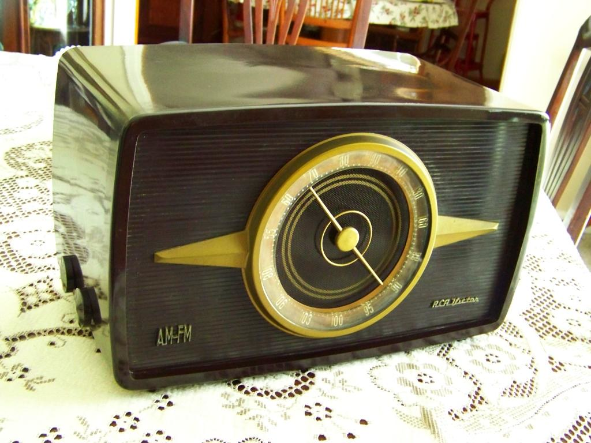
One-Hit Wonders of Canadian Radio: Where Are They Now?
One-hit wonder is usually a lazy label — most "one-hit" artists had whole careers on either side of the hit. But the Canadian canon is unusually rich in artists who scored one…
The Toronto Sound: How the 6 Became the Center of the Music World
Every decade, the music industry crowns a "sound" that belongs to a city — Motown had Detroit, grunge had Seattle, bounce had New Orleans. The 2010s belonged to Toronto. Not as a…
The Band: How a Group Called "The Hawks" Became Rock's Greatest Storytellers
They backed Ronnie Hawkins in Toronto dives when they were teenagers. They barnstormed with Bob Dylan when audiences booed him for going electric. They disappeared into a pink house in…
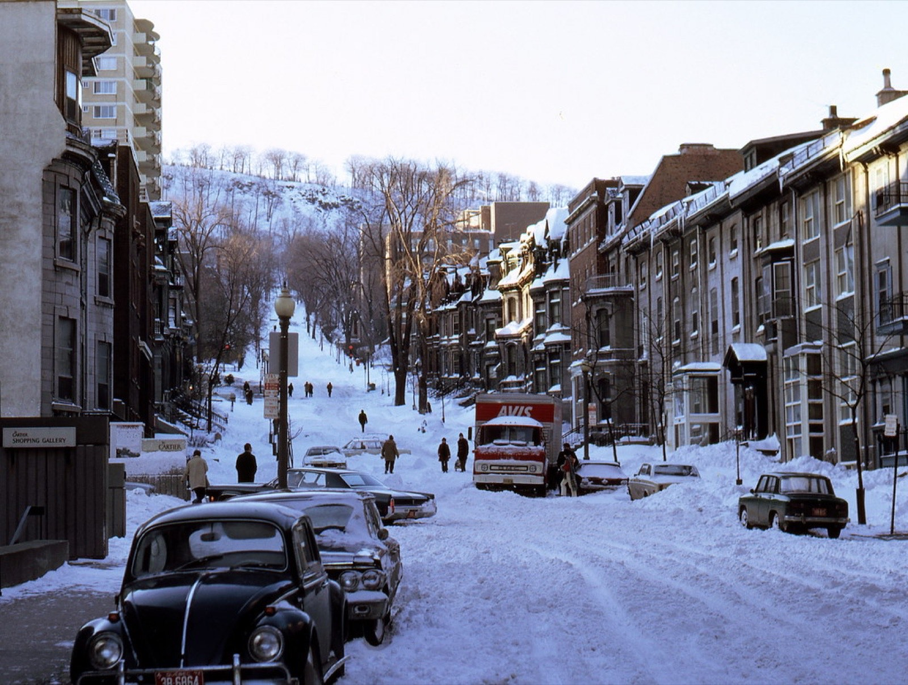
Quebec Chanson: The Tradition That Taught Canada How to Sing About Itself
Ask most English Canadians to name a Quebec song and you'll get "Mon pays" — or possibly nothing at all. That's the gap this article exists to close. Quebec's…
Indigenous Musicians You Need on Your Playlist in 2026
The most exciting growth story in Canadian music isn't a genre — it's a generation. Indigenous artists across the country are making records that are simultaneously rooted and…
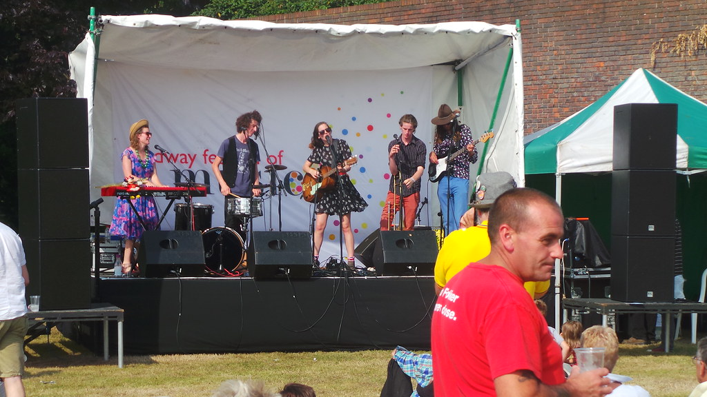
The Women Who Built Canadian Rock
The story of Canadian rock is usually told as a boys' club — Winnipeg garages, Toronto's Queen Street, the arena circuit of leather pants. But women were there at every stage…
Canadian Hip-Hop Before Drake: The Origin Story the Streaming Era Forgot
Every profile of Toronto's rap takeover starts in 2009. That's like telling the history of flight beginning with the jumbo jet. Canadian hip-hop is nearly a decade older than…

The Montreal Indie Explosion: How One Neighborhood Rewired Indie Rock
Between 2001 and 2010, Montreal produced the densest run of consequential indie rock in the world: Arcade Fire, Wolf Parade, The Unicorns, Islands, The Stills, Stars, Malajube, Besnard…
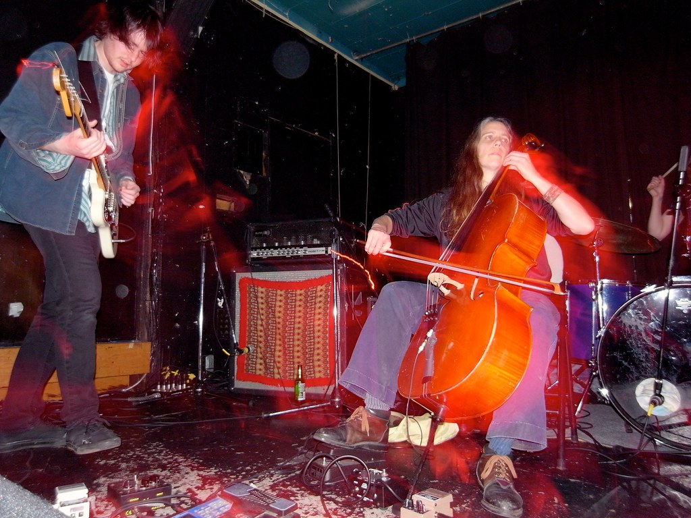
Vancouver's Punk and Hardcore Scene Through the Decades
Toronto had the first wave's density; Vancouver had the *continuity*. The West Coast's punk tradition — born in a Hastings Street basement in 1978 — never lapsed: every decade…
The Halifax Pop Renaissance: How a Small Port City Became Canada's Indie Capital
In the early 1990s, the center of gravity in Canadian indie rock shifted about 1,500 kilometers east of Toronto. Halifax — a small port city with a university, a fiercely independent campus…
Winnipeg: Canada's Hidden Music Capital
Toronto has the industry. Montreal has the mystique. Winnipeg has something stranger: a century-long habit of producing generational musical talent from a cold, isolated prairie city — as…
Newfoundland's Folk Revival: The Kitchen Party Conquers the Country
Newfoundland's traditional music never needed saving — it needed a road out. For generations the island's songs lived exactly where they were born: in kitchens, at kitchen…

Canadian Jazz Greats: From Oscar Peterson to BADBADNOTGOOD
Jazz is America's art form — which makes Canada's contribution one of the great quiet heists in music history. From a Montreal neighborhood that raised the greatest pianist since…

Does CanCon Radio Still Matter in the Streaming Era?
In 1971, the CRTC's CanCon rules reshaped a dial everyone listened to. In the 2020s, the dial is a legacy device: most music discovery happens through algorithms that owe nothing to…
How TikTok Changed the Game for Canadian Artists
No single force has reshaped Canadian music's economics this decade — not streaming, not radio reform — like a short-video app built on lip-syncs and fifteen-second hooks. TikTok…

Joni Mitchell's Canadian Roots and What She Took From Saskatchewan
She left Canada in 1965 and spent the height of her fame an hour from the ocean in California. And yet interviewers who tried to place her in Laurel Canyon always got corrected: Joni…

How Oscar Peterson Got His Start in Little Burgundy, Montreal
Every jazz origin story is improbable. This one begins in a Montreal neighborhood most of the music world has never heard of, with a railway porter's son who taught himself piano on a…
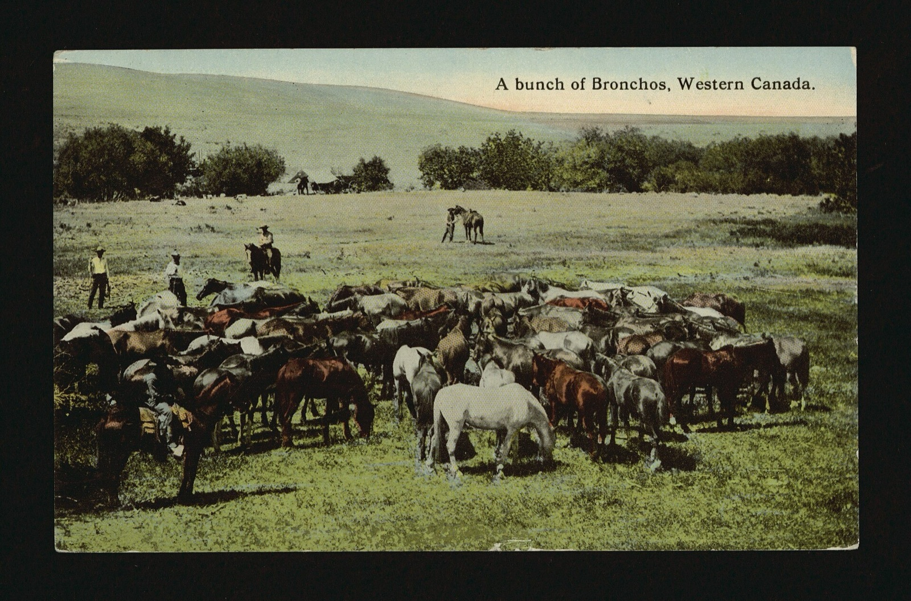
Alberta's Country Music Dynasty and Its Modern Heirs
No province in Canada carries a country music lineage like Alberta's. It's a hundred-year dynasty — from the original yodelling cowboys through the ranch-country songwriters to…

The Hamilton Music Scene: Steel City Sounds
Hamilton has never asked permission to matter. Twenty minutes down the QEW from Toronto's industry, the steel city built its own music identity out of industrial grit — louder…
Ottawa's Surprisingly Rich Music History
Ottawa is the city Canadians fly over — the government town, the postcard Parliament, the place where fun goes to be lobbied. Which makes its music history one of the country's…
Canada's North: Music from Iqaluit, Yellowknife, and Whitehorse
The map of Canadian music usually stops at the 60th parallel. It shouldn't. The three territorial capitals — Iqaluit, Yellowknife, Whitehorse — support three of the country's most…
Victoria and the West Coast Folk Tradition
Vancouver gets the volume; Victoria gets the *song*. The island capital — English-gardened, slower-paced, permanently half an hour behind the mainland in spirit if not in time zone — has…
Cape Breton's Fiddle Tradition: The Old World That Refused to Die
There is a place in Canada where the 18th century never fully ended — where the Scottish Highland fiddle style, gone extinct in Scotland itself, survived intact for two hundred years in…

Kitchener-Waterloo's Polka Heritage (Yes, Really)
Every autumn, a mid-sized Ontario twin city throws the largest Bavarian festival outside Germany, fills its festival halls with accordions, and becomes — briefly, gloriously — the polka…
The Edmonton Punk Scene of the 1980s
The 80s Canadian punk map has two famous coordinates — Toronto's first wave and Vancouver's hardcore christening (see our features). But the prairie had its own detonation, and it…
Thunder Bay: Canada's Most Underrated Music Town?
Ask most Canadians what Thunder Bay produced and they'll say grain shipments and hockey players? — keep it clean: they'll pause. But the Lakehead — Ontario's westernmost…

How Calgary Became a Hub for Canadian Metal
If Canadian metal has a capital, the obvious candidates are Toronto (the scene's historical mass) and Montreal (the death-metal empire). But **Calgary** — the Stampede city, the oil…

How MuchMusic Shaped a Generation (and What Killed It)
For a generation of Canadians, the country's culture didn't come from the CBC or the record store — it came from a converted mansion on Queen Street West with giant speakers…

When Canadian Artists Collaborate: The Greatest Pairings
Canada's music history is often told as a story of exports and exports-plus? — keep it clean: as a story of solo conquerors — but some of the country's most enduring records were…

American Artists Who Secretly Recorded in Canada
Rock history's map has a quiet Canadian watermark. Some of the biggest records by American artists weren't made in Los Angeles, New York, or Nashville — they were made in…
Canadian Musicians Who Became Successful Actors (and Vice Versa)
The stage-to-screen border runs in both directions, and Canada keeps staffing both crossings. Some of the country's most recognizable screen faces started with a guitar and a band…
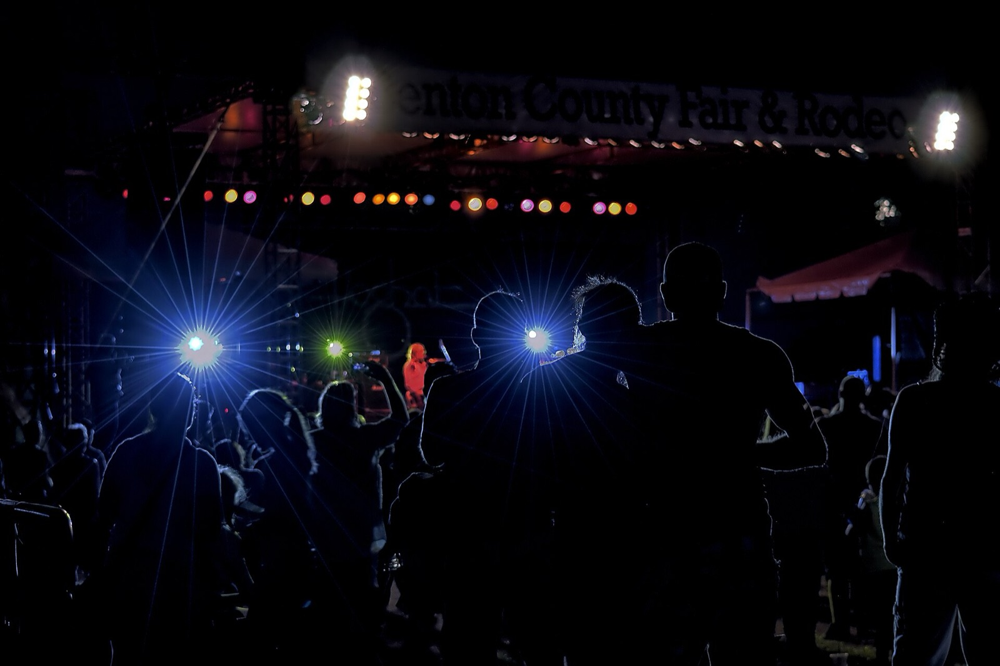
The Supergroups of Canadian Music, Ranked
A supergroup is a wager: that the sum of established talents can exceed their parts — or, at minimum, that the lineup photo alone justifies the experiment. Canada's supergroup…
Canadian Artists Writing Hits for International Stars
Some of the biggest songs in the world have a Canadian passport. Not the singer's — the *writer's*. The Canadian songwriting tradition has always exported its words and melodies…
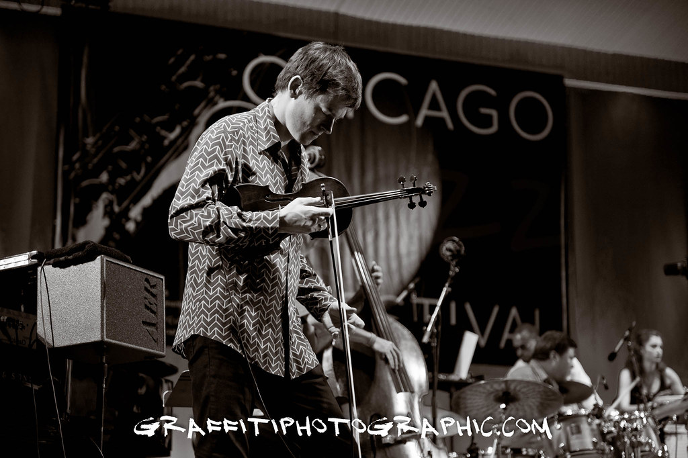
Cross-Border Duets: Canada's Most Productive Frontier
Pop music's most reliable engine is the pairing across a border: two accents, two audiences, one chorus big enough for both. For Canada — the world's great musical trading partner…
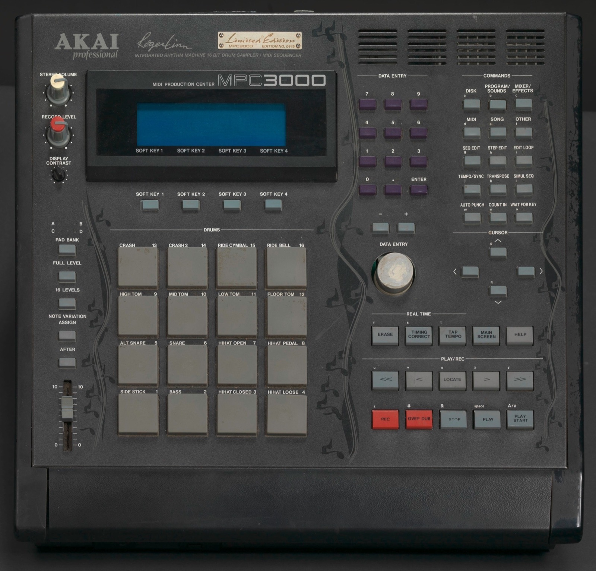
When Hip-Hop Artists Sample Canadian Classics
Dig through the credits of rap's biggest records and a strange pattern emerges: the country's classic catalog — folk ballads, new wave synths, arena-rock riffs — keeps turning up…
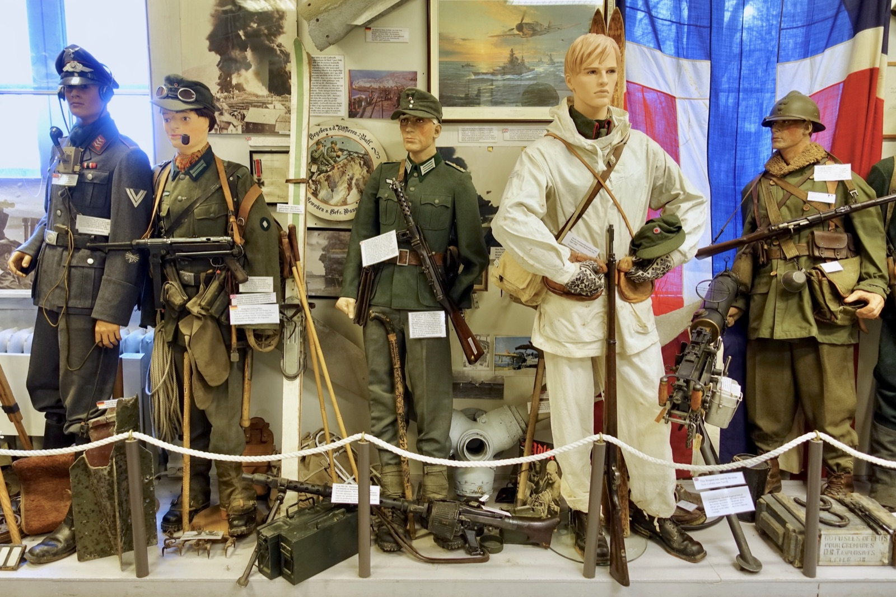
Feuds and Rivalries in Canadian Music History
Canadians are supposed to be polite, and mostly we are — which is why the country's music feuds hit so hard when they arrive. The beefs of Canadian music tend to be *personal*…
Canada's Weirdest Music Venues, Past and Present
Canada's music happens in storied rooms (see our Legendary Venues series) — but it also happens in *barns, boats, bookstores, and buildings that were never supposed to have drums in…
The Strangest Instruments in Canadian Music
Canadian musicians have never been precious about *what* makes a sound — only about whether it works. Across the country's discography you'll find medieval machines, electronic…

Hockey and Music: The Surprising Connection
No other country's national sport has a soundtrack the way Canada's does. Hockey doesn't just appear in Canadian music — it *structures* it: anthems played before every game…
Canadian Christmas Songs: A Genre of Their Own
Every country sings Christmas. Only Canada has turned it into a *genre* — a whole shelf of records and standards that could only have been written here, where the holiday's dominant…
The Best (and Worst) National Anthem Performances in Canadian History
"O Canada" is a deceptively hard sing — a wide range, a bilingual second verse nobody practices, and an audience of millions ready to judge every syllable. The big-stage history…

The Buskers of Canada: Street Musicians Who Became Stars
Before the streaming pipeline, before Canadian Idol, before the bar circuit — there was the sidewalk. Busking is Canada's oldest open-mic: no gatekeeper but the weather, no audience…
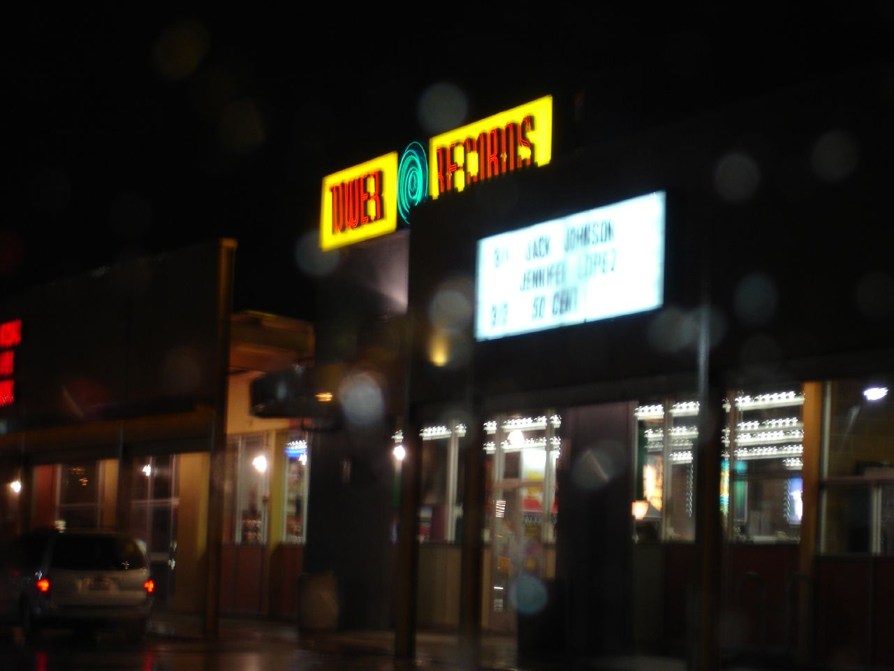
Canadian Music Urban Legends: Fact or Fiction?
Every scene mints its legends — stories too good to check. We checked. Here's the docket: five famous tales from Canadian music history, each tried against the record, each delivered a…

The Lost Albums: Canadian Records That Were Shelved or Buried
For every album released, there's another in a vault somewhere — mixed, mastered, cover-art-ready? — keep it clean: finished, or nearly — that never came out. Labels flinched, artists…

The CHUM Chart Era: How Toronto's Top 40 Radio Ruled the Dial
Before CanCon regulations, before MuchMusic, before the word "playlist" existed — there was a 50,000-watt Toronto radio station that invented the modern Canadian hit machine.…
Yé-Yé to Folk Revival: Canada's 1960s Cultural Transformation in Song
The 1960s didn't just change Canadian music — they changed what Canadians believed music was *for*. At the decade's start, the country's songbook was a split inheritance:…
The Disco Era in Canada: Clubs, Classics, and Forgotten Gems
Between the arena rock of the 70s and the synth-pop of the 80s, there was a beat — four-on-the-floor, strings on top, bass walking like it had somewhere to be. Disco's golden age…
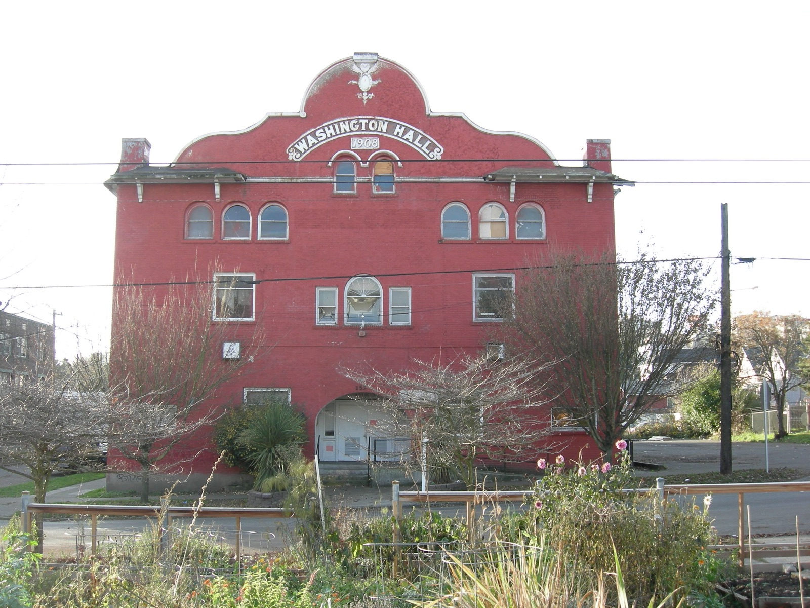
Early Canadian Punk: The '78 Explosion
Punk hit Canada like weather — suddenly, everywhere, and with no interest in asking permission. Between 1976 and 1979, in Toronto's rented halls, Vancouver's basement cabarets…
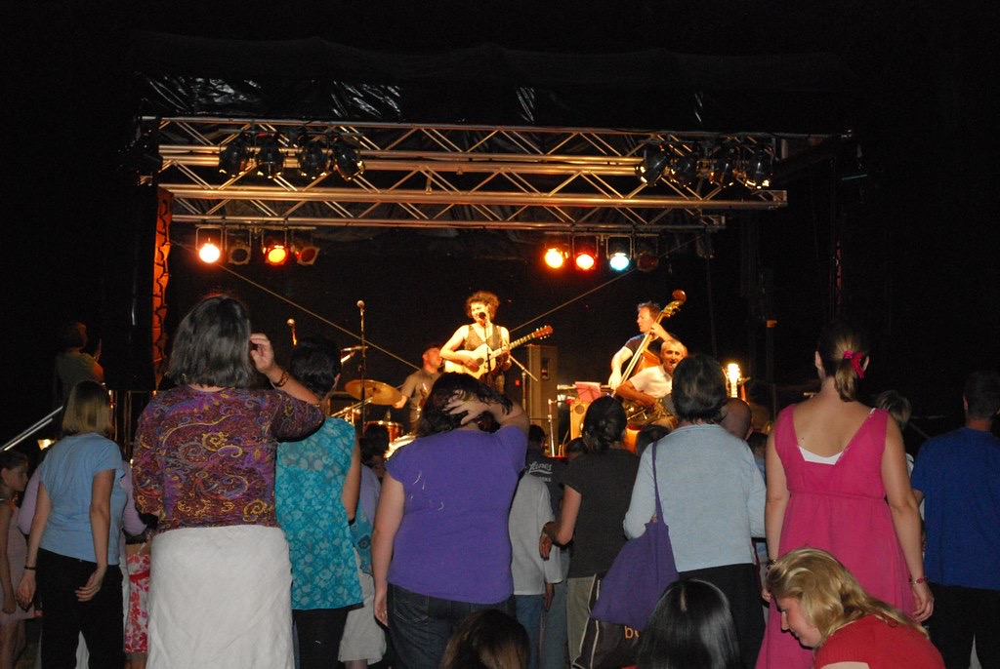
The Mid-90s Alternative Boom and What Killed It
For a few years in the mid-1990s, Canadian alternative rock had everything: a national TV channel playing wall-to-wall videos, a compilation series that went multi-platinum, a festival…

The Blog House Era: When Canadian Electro Went Global
For about four years in the mid-to-late 2000s, the center of the electronic music internet was disproportionately Canadian. The "blog house" era — that snare-heavy, blog-fueled…
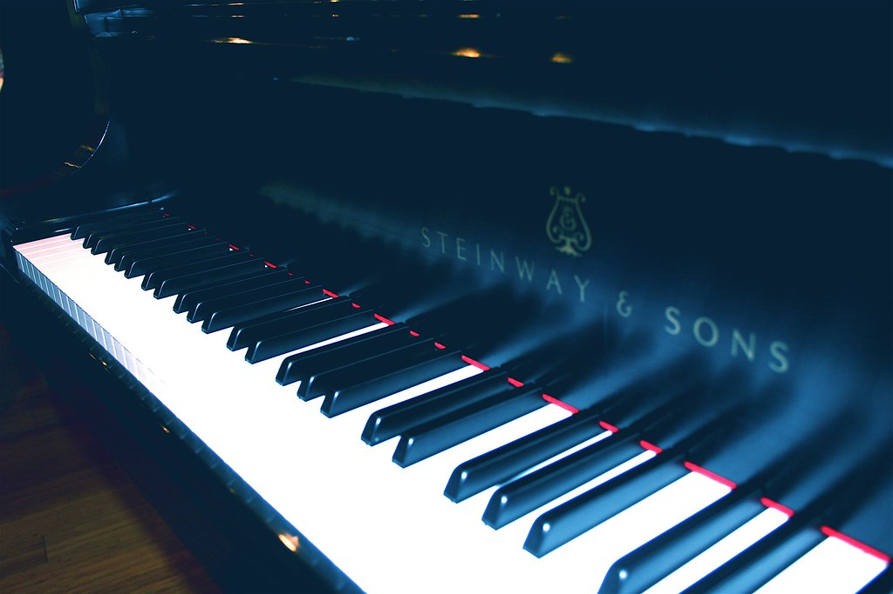
Canadian New Wave: Why the 80s Sounded Different Here
New wave was a global movement, but every country heard it through its own filter — and Canada's filter was unlike anyone's. Canadian new wave came up through **art schools…

The SoundCloud Generation: How Toronto's Underground Ate the Charts
Before the arena tours and the Super Bowl, Toronto rap was a *SoundCloud scene*: anonymous uploads, no photos, no press, mystery as marketing — and a sound so distinctive it conquered the…

Canada's Most Infamous Concerts and Festival Meltdowns
For every legendary show, there's a legendary disaster — the night the crowd turned, the sky opened, or the plan collapsed in front of everyone. Canada's concert history has its…
Massey Hall: A Century of Iconic Moments
Toronto has newer rooms, bigger rooms, cooler rooms. It has only one Massey Hall — the red-brick room on Shuter Street that has functioned, since 1894, as the country's unofficial hall…

Tiny Venues That Launched Massive Careers
Every arena act has a 50-person origin story — the room where they were nobody, the night they were suddenly *somebody*. Canada's club circuit has been the country's career engine…
The Art of the Canadian Arena Tour: Logistics of a Massive Country
Touring Canada is a math problem with a soundtrack. The second-largest country on earth contains, for a touring band, perhaps a dozen true arena markets — strung across six time zones? …

Open Mic Nights Where Stars Were Discovered
Before the label deal, before the manager, before the demo — there's the three-song slot at an open mic, a borrowed guitar, and a room of strangers deciding in real time. Canada's…
Great Canadian Songs Written in an Hour
The romantic image of songwriting is the tortured months-long excavation (see our companion feature on the slow ones). But the craft's dirty secret is that a startling share of the…

The Producers with the Most Canadian Classic Credits
Behind every classic record stands a Canadian more often than the credits-checking public realizes. The country's producer pantheon didn't just shape Canadian music — it shaped…

Songs That Took Years to Finish and Were Worth the Wait
For every one-hour miracle (see our companion feature), there's a song that fought its writer for years — notebooks of verses, abandoned drafts, melodies that refused to resolve. The…
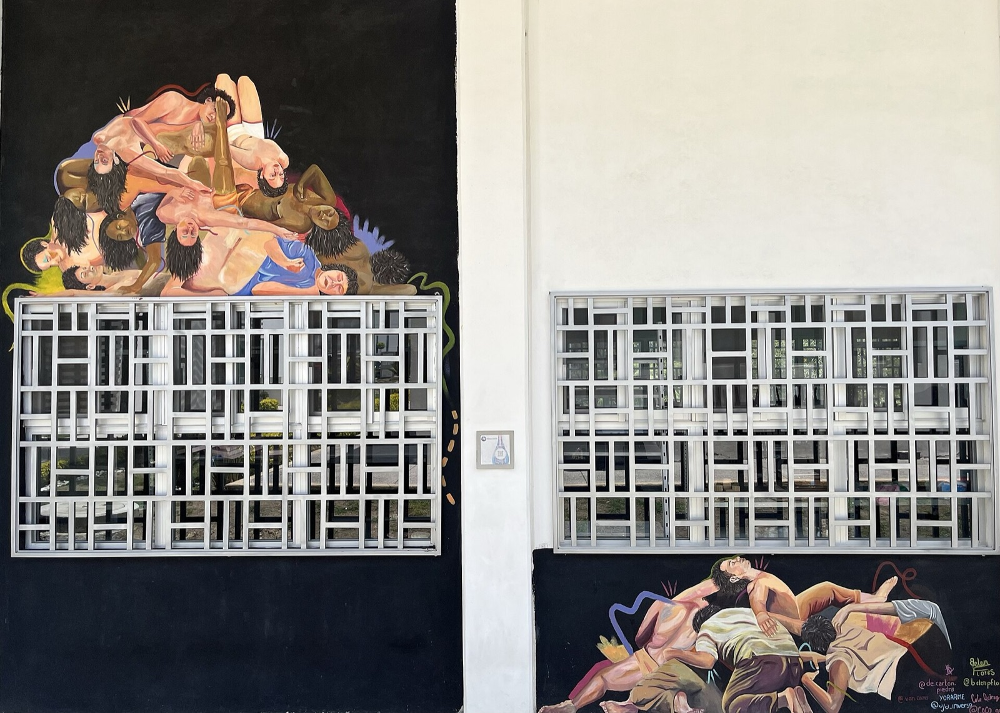
Canadian Album Titles: Stories Behind the Names
An album title is the first lyric — the sentence the artist gets before the music starts. Canada's classic records carry titles that range from triple-entendre puzzles to accidental…
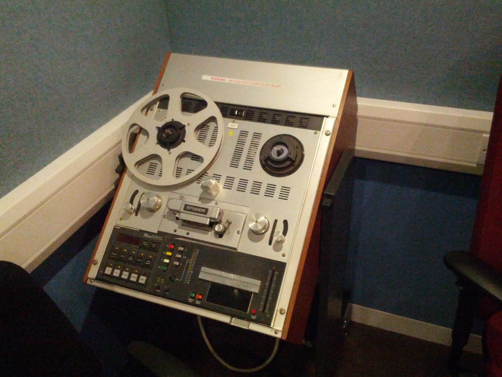
The Last-Minute Additions That Became Lead Singles
Every album has a schedule: the singles are chosen, the campaign is set, the train leaves the station. And then — an 11th-hour studio moment, an afterthought, a track nobody planned …
Concept Albums from Canadian Artists, Ranked
The concept album is rock's most ambitious form — a record with a thesis, a narrative, a world. It's also the form Canadian artists keep quietly mastering, from prog's…
The Art of the Canadian Breakup Song
Every country writes breakup songs. Canada writes *the good ones* — the devastating, specific, emotionally literate goodbyes that other songwriters study. It's the country's…

How Canadian Artists Write About Home Without Being Corny
Every songwriter has a hometown. Most write about it badly — syrup and skylines, flag-waving in 4/4. Canadian songwriters have spent sixty years solving the same problem with remarkable…
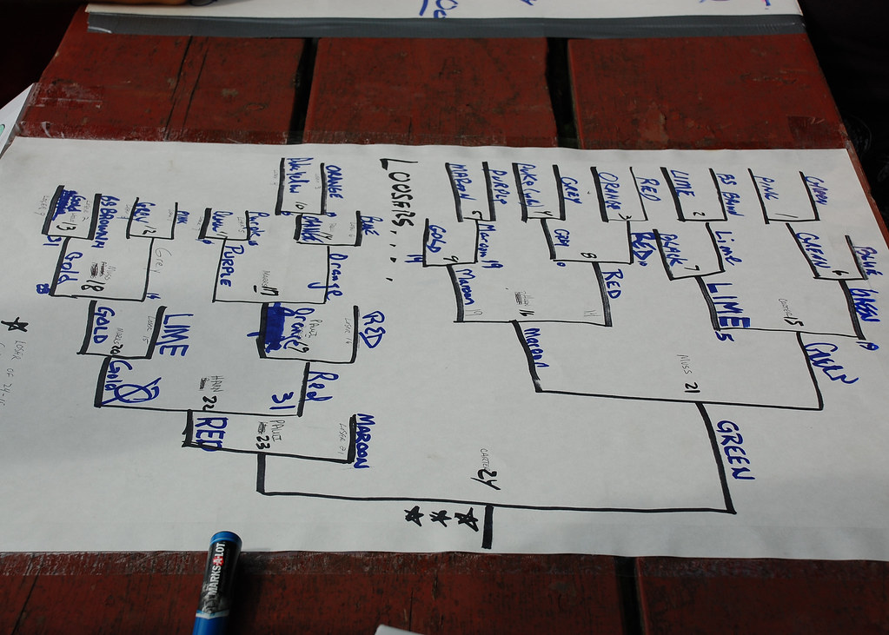
The Ultimate Canadian Music Bracket: 64 Artists, Head-to-Head
Every debate this website hosts — the songbook, the canon, the underrated, the overrated (see our features) — converges on one question: *who's the greatest?* We can't answer it…
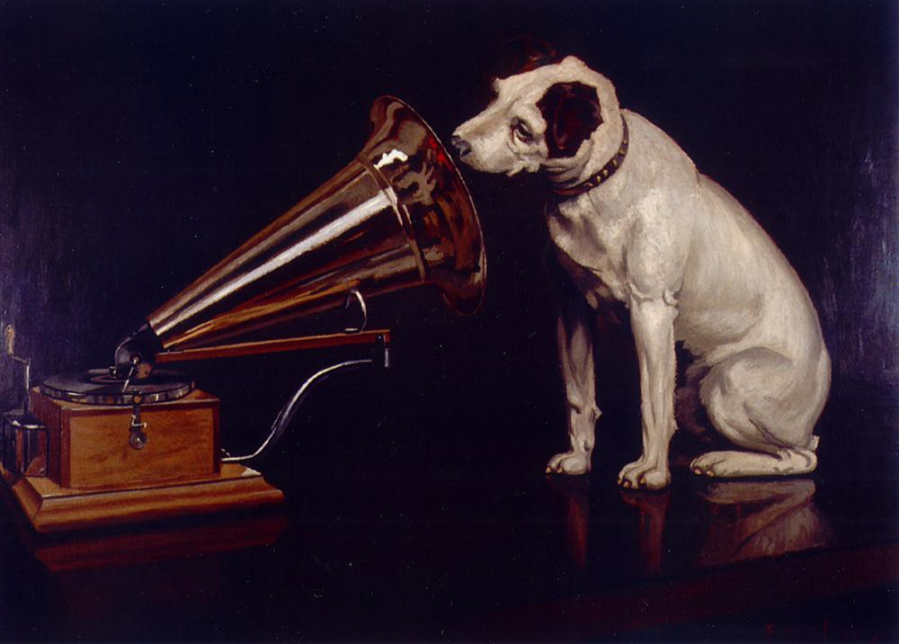
Berliner Gramophone: How Montreal Helped Invent the Record Industry
The record industry — the entire global apparatus of recorded sound — has a Canadian address in its origin story: a factory on the edge of Montreal, in the last years of the nineteenth…
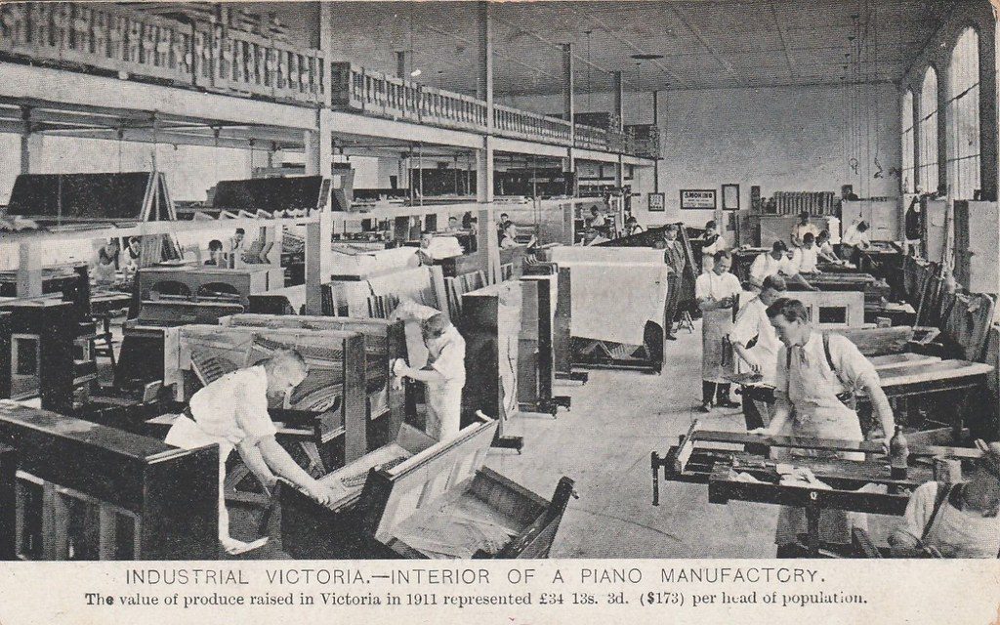
Heintzman & Co.: When Toronto Built Pianos for the World
Before records, before radio, before the phrase "music industry" existed — there was the *parlour piano*, and Toronto built some of the best on earth. **Heintzman & Co.**, the…

K-Tel's Winnipeg Empire: Compilation Culture Before Spotify
Long before the playlist, before the algorithm, before "now that's what I call music" became a global franchise, a company from Winnipeg figured out that what people wanted…
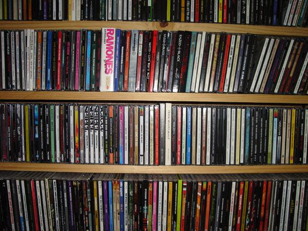
Big Shiny Tunes and the Golden Age of the Compilation Album
Every generation gets the format it deserves, and the generation that came of age in mid-90s Canada got the **Big Shiny Tunes** CD: a jewel-cased snapshot of the country's alt-rock…
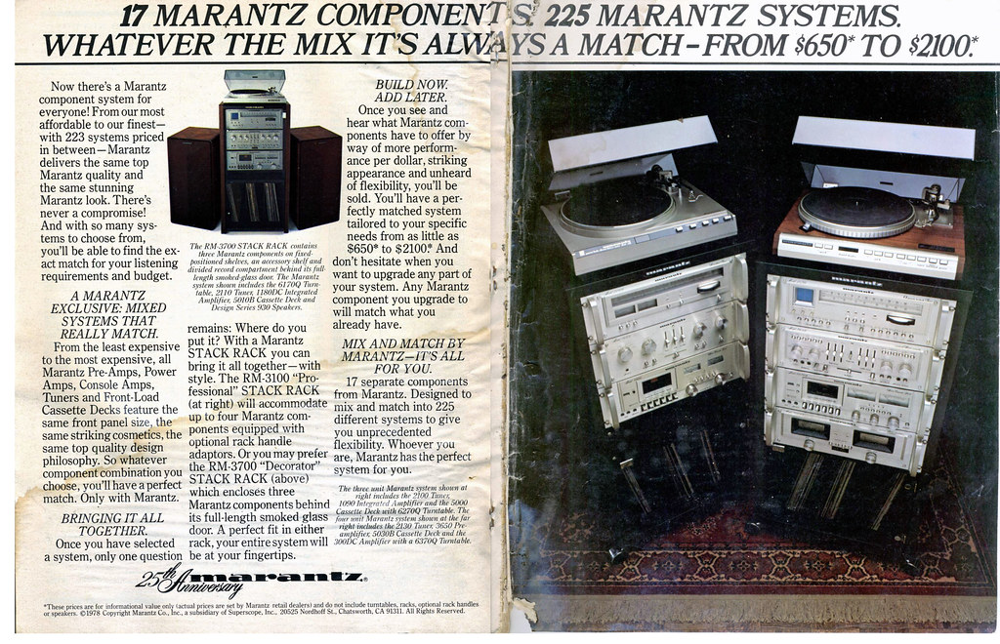
RPM Magazine: Canada's Original Chart Authority
Before streaming dashboards, before Billboard's Canadian charts, before the word "metrics" entered the industry's vocabulary — there was a weekly magazine published in…
The NewMusic: Canada's Answer to 60 Minutes for Bands
Before MuchMusic put VJs in the windows, Toronto's Citytv was already treating music as *journalism*: ***The NewMusic*** (1979–2008, with roots earlier), the weekly program that…
TV Theme Songs Every Canadian Knows by Heart
Before streaming made theme songs skippable, Canadian television raised the art form: jingles and anthems engineered so perfectly that a nation memorized them *involuntarily*. They are…
Degrassi's Musical Legacy: Theme Songs and Star Crossovers
No Canadian television institution has a bigger musical footprint than **Degrassi** — the after-school drama that ran (in its various incarnations) for four decades and seeded the…
NFB Music: The Soundtracks of the National Film Board
The most important film-music institution in Canadian history isn't a studio — it's a government agency. The **National Film Board of Canada** (founded 1939) has commissioned more…

Heritage Minutes with Great Music, Ranked
The Heritage Minute — sixty seconds of national history, compressed, dramatized, and aired into the cultural bloodstream — is Canada's most unlikely film-music institution. The…

"I Am Canadian": The Molson Rant That Became an Anthem
In 2000, a beer company aired a commercial — a two-minute monologue, a guy in a plaid shirt on a stage, cataloguing what Canada is and isn't — and the country adopted it instantly as…

Come From Away: How a Newfoundland Musical Conquered Broadway
The unlikeliest Broadway blockbuster of the century — a musical about 9/11, set in Gander, Newfoundland, scored for folk instruments and kitchen-party rhythms, with no villains and a chorus…
Hard Core Logo: Canada's Greatest Fake Rock Band
Every country gets the fake rock band it deserves. Britain got *This Is Spinal Tap* — a comedy of vanities. Canada got ***Hard Core Logo*** (1996) — a tragedy with jokes, a punk…
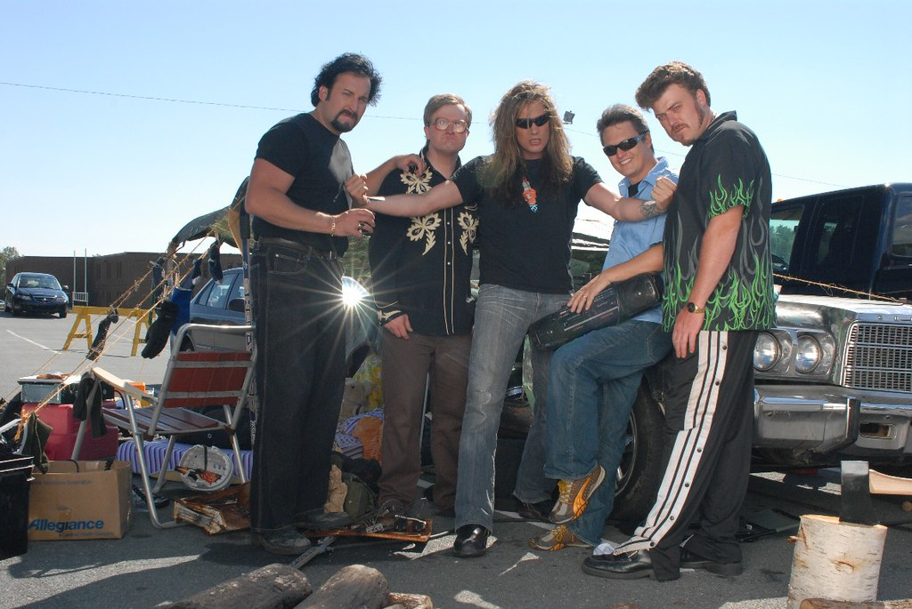
The Trailer Park Boys Musical Universe
The trailer park at the center of Canada's longest-running comedy isn't just a place where jokes happen — it's a fully functioning *musical* universe: fake bands with real…

Canadian Rock Mockumentaries Worth Watching
Canada has contributed more to the rock mockumentary than any country except the one that invented *Spinal Tap* — and arguably with more variety: we've made mock-docs about punk…
Punjabi Music's Canadian Home: Brampton's Scene
The global center of Punjabi popular music isn't in Punjab — half of it is in **Brampton**, Ontario. The Toronto suburb, heart of one of the world's largest Punjabi diasporas, has…
Toronto's Soca and Reggae Heartbeat: The Caribbean Connection
Toronto's identity as a music city is usually told in rock and hip-hop chapters. But the city's *rhythm* — the part of its sound that makes you move — comes from the Caribbean.…
Bhangra in British Columbia: A Decades-Long Party
Long before the 905's streaming-era dominance (see our Brampton feature), the West Coast had its own Punjabi music powerhouse. **B.C.'s bhangra tradition** — rooted in the…
Ukraine Meets Canada: Diaspora Music After 2022
Canada holds one of the world's largest Ukrainian diasporas — a community whose musical traditions stretch back to the prairie homesteads of the 1890s. When Russia's full-scale…
Little Manila, Little Portugal, Little Italy: The Neighbourhood Venue Scenes
Toronto's music map isn't just the Horseshoe and the El Mo — it's the banquet halls of North York, the Portuguese clubs of Dundas West, the Italian social clubs of College…
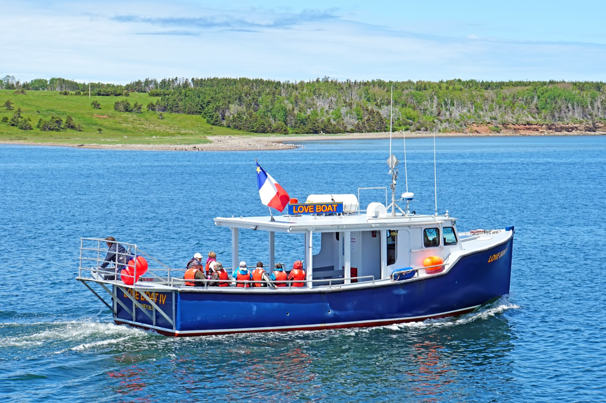
Acadian Music: The Cousins Who Kept Singing
In 1755, the British expelled the Acadians — the French-speaking farmers of the Maritimes — scattering families across the continent in one of North America's first great ethnic…

Franco-Ontario's Breakout Generation
Between the two solitudes lies a third story: Ontario's francophone community — roughly a million strong, the country's largest outside Quebec — has been making music in French on…
Manitoba's Métis Fiddle Masters
The oldest living fiddle tradition in North America isn't in Appalachia or the Ozarks — it's on the Canadian prairies, where the Métis Nation has been fiddling since the early…
Quebec's Cabaret-Punk Underground
Beneath Quebec's official music culture — the chanson canon, the ADISQ gala circuit, the arena rock mainstream — runs a wilder current: the **cabaret-punk underground**, where the…
ADISQ and Quebec's Parallel Universe
Every year, Quebec's music industry throws a gala that most of English Canada doesn't watch, for awards most of English Canada couldn't name, celebrating stars most of…
Helen Creighton: The Folklorist Who Saved Nova Scotia's Songs
Somewhere in Nova Scotia, in the decades after the First World War, a woman with an Edison phonograph began driving the province's back roads, knocking on farmhouse doors, and asking…
Work Songs: Lumberjacks, Miners, and Railway Workers' Music
The country was built by work that sang: the lumber camps of the Ottawa Valley, the coal seams of Springhill, the rail lines stitching the continent — every one of them generated its own…
Sea Shanties: The Atlantic Songbook
Before engines, ships ran on rhythm: the heave of the capstan, the pull of the halyard, coordinated by song. The **sea shanty** — the work song of the age of sail — was functional music…
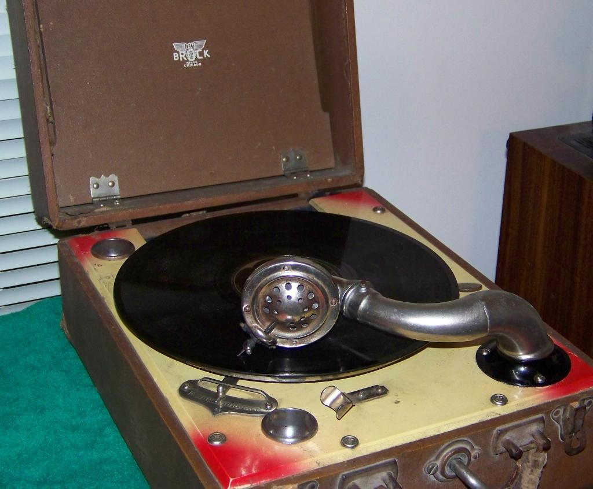
First Nations 78s: The Earliest Indigenous Recordings
The first recordings of Indigenous music in Canada predate the country's music industry entirely: 78rpm discs cut in the 1910s–1930s, capturing songs that had existed for millennia on…
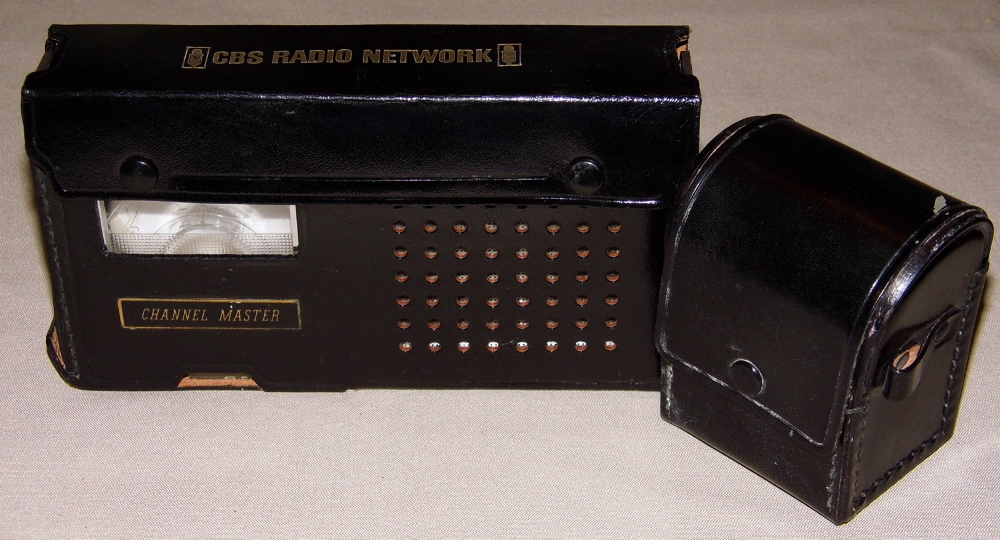
The Field Collectors Who Mapped Canada's Traditional Sound
Canada's folk-music map wasn't drawn in universities — it was drawn by a handful of obsessive individuals who drove the back roads with recording machines, knocked on farmhouse…
Toronto's Lost Venues: Kool Haus, the Big Bop, and More
Toronto's music history isn't only in the rooms that survived — it's in the ones that didn't. The city has been demolishing its music venues at a steady civic churn? …
The Guvernment: Remembering Toronto's Nightclub Kingdom
For two decades, a sprawling entertainment complex on Toronto's waterfront functioned as the city's nightlife capital: **the Guvernment** (with its mid-size sibling the Kool Haus…
Tribute Bands: Canada's Parallel Music Economy
Somewhere in Canada tonight, the Tragically Hip are playing — not *the* Hip (see our features), but a tribute band so devoted that the audience, closing their eyes, will get *most* of the…

Canadian Concert Politeness: A Field Guide for Out-of-Towners
Foreign visitors to Canadian concerts report the same disorientation: the crowd is *polite* — aggressively, structurally, almost *competitively* polite — and the unwritten rules run deeper…
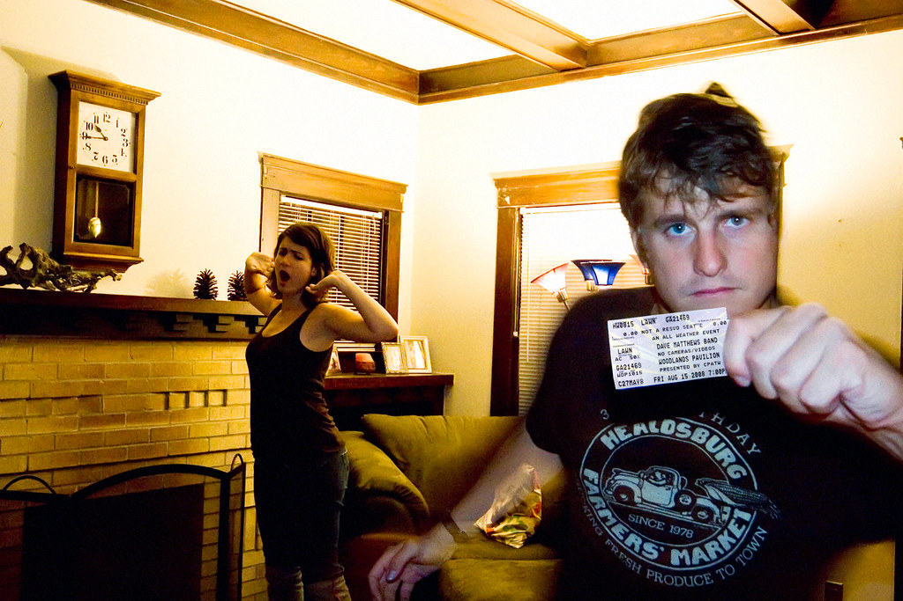
"Wait — They're Canadian?!": The Artists Who Surprise Everyone
Every Canadian has lived the moment: a song comes on, someone says "love this artist," and the reply lands — "you know they're Canadian, right?" — followed by…

Bruce Cockburn: 50 Years of Wonder and Protest
Ask Canada's musicians who the country's greatest living songwriter is and, often as not, the answer is **Bruce Cockburn** — the Ottawa-raised guitarist whose fifty-year career…
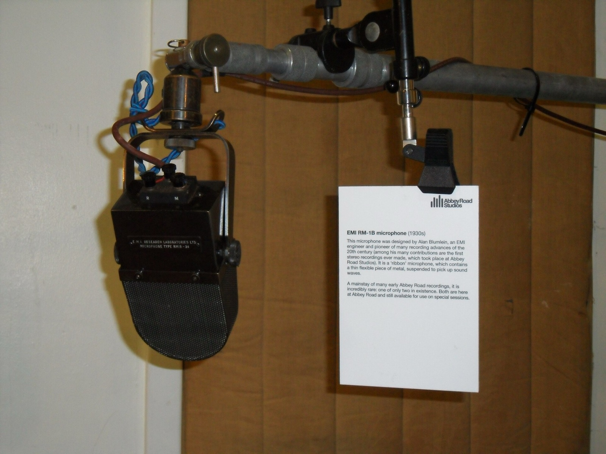
k.d. lang: Constant Craving and the Art of Being Unmistakable
**k.d. lang** has been called many things — cowpunk renegade, Nashville invader, torch-song revivalist, Canada's most effortlessly cool export — but the accurate description is…
Carly Rae Jepsen: How "Call Me Maybe" Made Her Famous — and How *Emotion* Made Her Immortal
In 2012, Carly Rae Jepsen had the biggest song on earth, and the entire music industry agreed on what she was: a one-hit novelty act with a shelf life of about eighteen months. A decade…
Tegan and Sara: From Indie Twins to Pop Activists
**Tegan and Sara** have had, essentially, four careers: scrappy Calgary indie twins, critical-darling songwriters, synth-pop hitmakers, and activist-institution founders. Each reinvention…
Avril Lavigne: Pop-Punk's Canadian Blueprint
In 2002, a 17-year-old from Napanee, Ontario — skate shoes, necktie, zero interest in the era's pop machinery — released a debut album that detonated the boy-band era and blueprinted…

John K. Samson and the Weakerthans: Winnipeg's Poet Laureates
The best *writing* in Canadian rock — the most literary, the most humane, the funniest and saddest at once — belongs to **John K. Samson** and **the Weakerthans**, the Winnipeg band that…

Propagandhi: Punk's Most Uncompromising Band
There are political punk bands, and then there is **Propagandhi** — the Portage la Prairie/Winnipeg institution that, for three decades, has treated punk rock as a discipline rather than a…
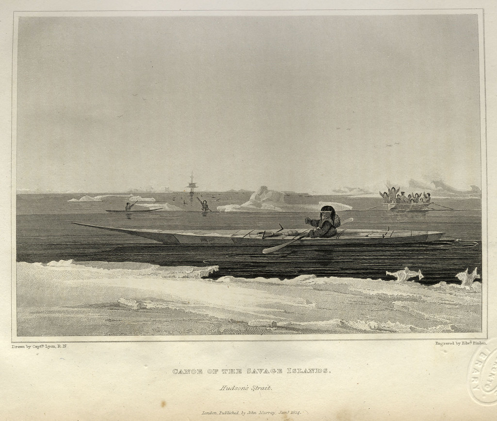
Elisapie: The Power of Singing Home
**Elisapie** does something rare and risky: she sings *home* — Salluit, the Inuit village on the northern Quebec coast where she was raised — to audiences who mostly can't imagine it…

Harmonium: L'Heptade's Prog-Folk Masterpiece
In 1976, a Montreal trio walked into a studio and made what many consider the greatest album in Quebec history — a double-LP prog-folk suite, sung entirely in French, that filled the…
Bachman-Turner Overdrive: Taking Care of Business, the Working-Class Way
The biggest band of the 1970s Canadian wave wasn't artful, mysterious, or cool. **Bachman-Turner Overdrive** was loud, blunt, and *proud of it* — a machine-built rock and roll band…
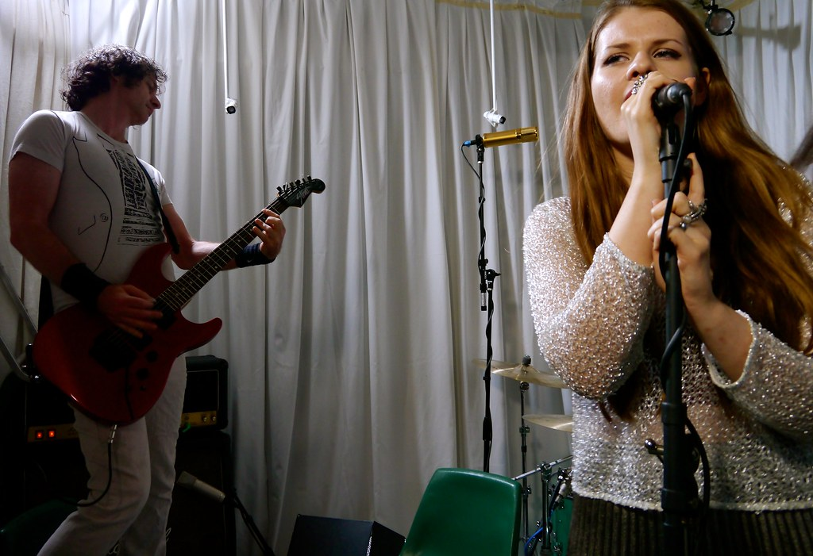
April Wine: Canada's Arena Rock Journeymen
**April Wine** never had a mythology. What they had was *reliability* — five decades of it, from Halifax school gyms to the world's arenas, through every mutation of rock fashion, led…

Trooper: Raise a Little Hell and the B.C. Party Circuit
Some bands have hits. **Trooper** has *anthems* — the kind of songs that don't just play at a B.C. party but *are* the party. For five decades, the Vancouver band's catalog has…

Helix: The Hardest-Working Hair Band in the Country
The 80s hair-metal boom minted dozens of Canadian bands; almost all of them are gone. **Helix** — the Kitchener, Ontario quintet fronted forever by **Brian Vollmer** — is not gone.…

The New Pornographers: Power Pop as a Group Project
A supergroup that's actually a *band*; a band whose membership keeps shifting and whose sound never does; a catalog of power-pop so consistently excellent that critics ran out of…
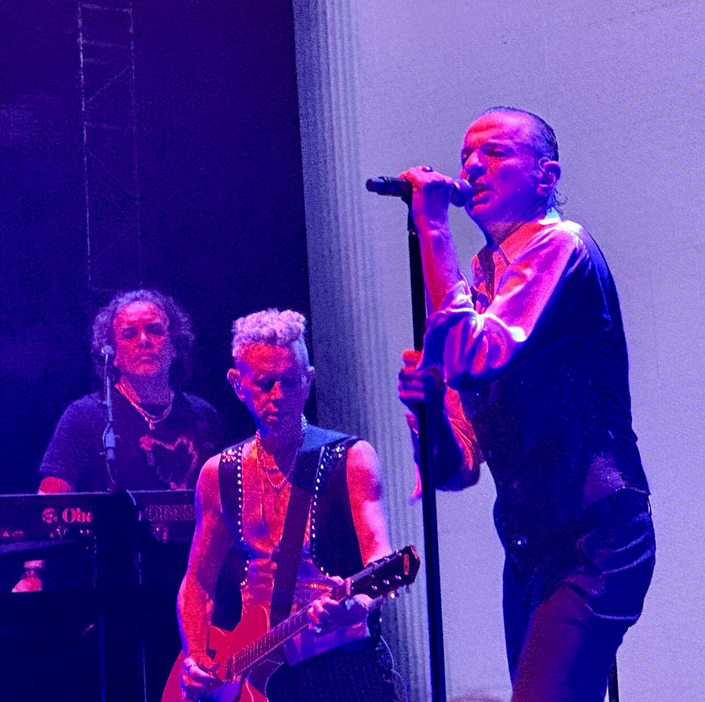
Metric: Fighting Through the Indie Wars to Arena Lights
The 2000s indie wave was supposed to eat its own — blog hype, label turbulence, the perpetual *next thing* churning every eighteen months. **Metric** outlasted it all: from Toronto…

Death From Above 1979: The Loudest Two-Piece in Canada
Two people — bass and drums, nothing else — making the noise of a malfunctioning? — keep it clean: making the noise of a jet engine in a basement. **Death From Above 1979** were the most…

Billy Talent: From Pezz to the World's Biggest Stages
Before the platinum records and the arena headliners, there was a Mississauga band called **Pezz** — four teenagers playing shows nobody booked, in a scene that didn't exist yet. The…
Maestro Fresh Wes: The First
Every scene needs a first — someone who proves the impossible thing is possible. For Canadian hip-hop, that someone is **Wesley Williams**, the Toronto MC who, in 1989, released "Let…
Michie Mee: Canada's First Lady of Rap
The first Canadian MC to sign with a major American label wasn't from Vancouver or even the Toronto you know now. She was a Jamaican-Canadian teenager from Toronto's west end who…

Dream Warriors: The Jazz-Rap Revolution, Canadian Division
In 1990, two Toronto MCs — King Lou and Capital Q — released a single that sounded like nothing else on earth: a loping, swinging hip-hop track built on a sample of Quincy Jones'…

k-os: The Artist Who Refused to Pick a Lane
For about ten years, **k-os** was Canadian music's beautiful problem: a rapper who sang, a singer who produced, a producer who rocked, and a songwriter whose albums kept winning …
Kardinal Offishall: The Anthem Maker
Every era of Canadian hip-hop has needed a bridge — an artist whose career connects the underground to the mainstream, the Jamaican-inflected foundation to the global wave — and for three…
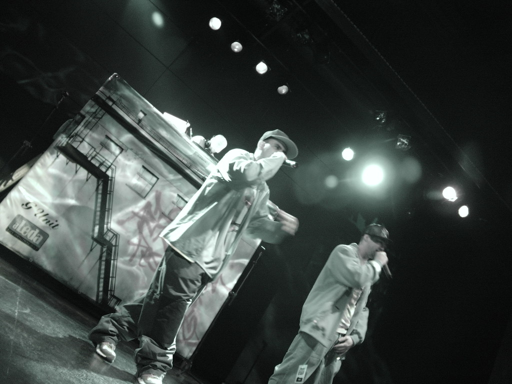
Shad: The Rapper's Rapper
Every era of Canadian hip-hop has had its *conscience* — the MC whose technical brilliance is matched by an insistence that rap be *about* something — and for the past two decades, that…

Drake's Toronto: A Neighborhood-by-Neighborhood Guide to the 6
No artist in history has name-checked a city as thoroughly as Drake has name-checked Toronto. Streets, intersections, housing projects, high schools, plazas, freeway exits — his catalog…
Kaytranada: The Kid Who Made House Music Glow
Montreal has exported many sounds, but none warmer than this one. **Kaytranada** — Louis Kevin Celestin, a Haitian-Canadian producer who started making beats as a teenager in the…
Backxwash: Horror-Rap's Polaris-Winning Vision
The greatest Canadian hip-hop album of the 2020s so far arrived from the last place the industry looked: **Backxwash** — the Zambian-born, Montreal-based, trans horrorcore artist whose…

Haviah Mighty: 13th Floor's Feminist Fire
The new center of Canadian rap has a name, and it arrived with a manifesto: **Haviah Mighty** — the Brampton-raised, Toronto-forged MC whose ***13th Floor*** (2019) won the Polaris Music…
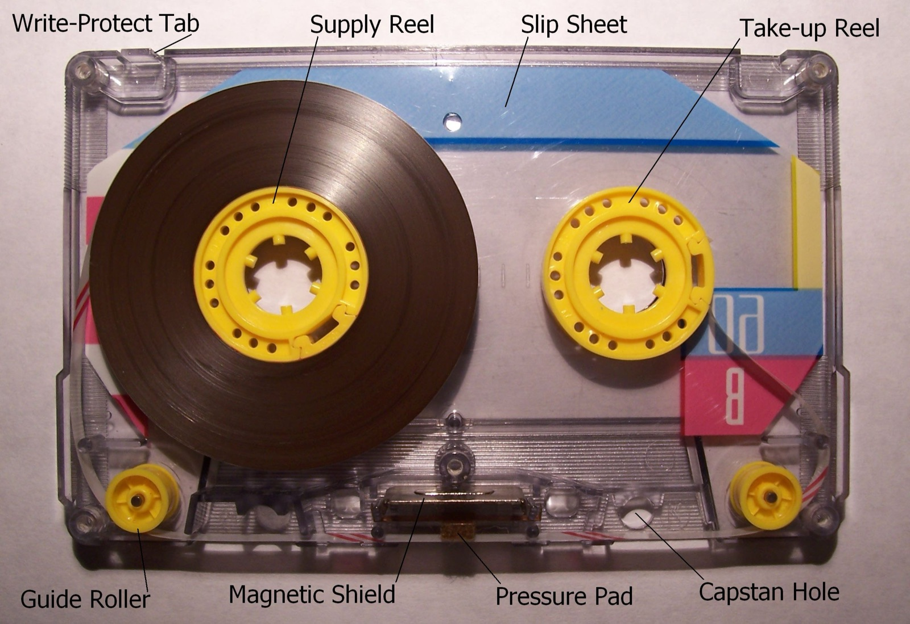
Halifax's 90s Hip-Hop Underground: The Scene Everyone Forgot
Ask about 90s Halifax music and the answer arrives instantly: Sloan, the Marquee, the indie explosion (see our features). But the city's 90s had a *second* underground, running…

Grossman's Tavern: Toronto's Blues Classroom
Some venues host history. **Grossman's Tavern** taught it. Tucked where Spadina Avenue's old Chinatown begins, under the same roof since 1943, Grossman's is Toronto's…
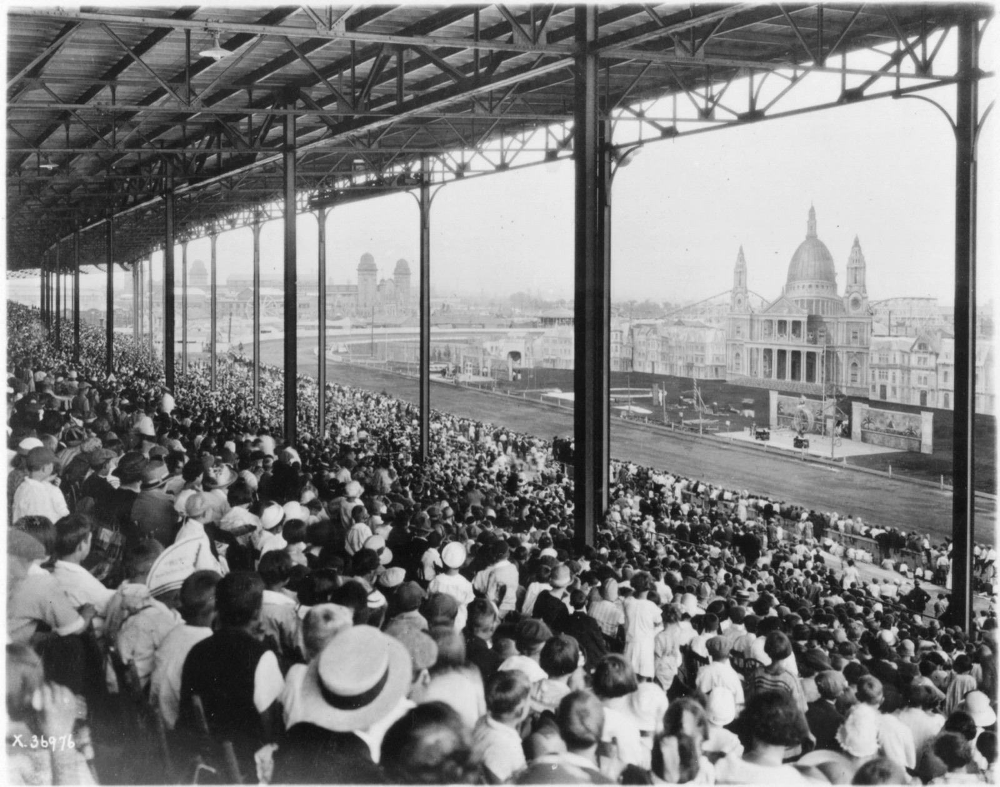
The CNE Grandstand: The Summer's Biggest Stage
Before Budweiser Stage, before arenas ruled, Toronto's biggest summer show happened where the city had always thrown its parties: the Canadian National Exhibition. The **CNE…

Festival Express: The Greatest Train Ride in Rock History
In late June 1970, a chartered train pulled out of Toronto carrying Janis Joplin, the Band, the Grateful Dead, Delaney & Bonnie, Buddy Guy, Ian & Sylvia, and a rolling bar that…
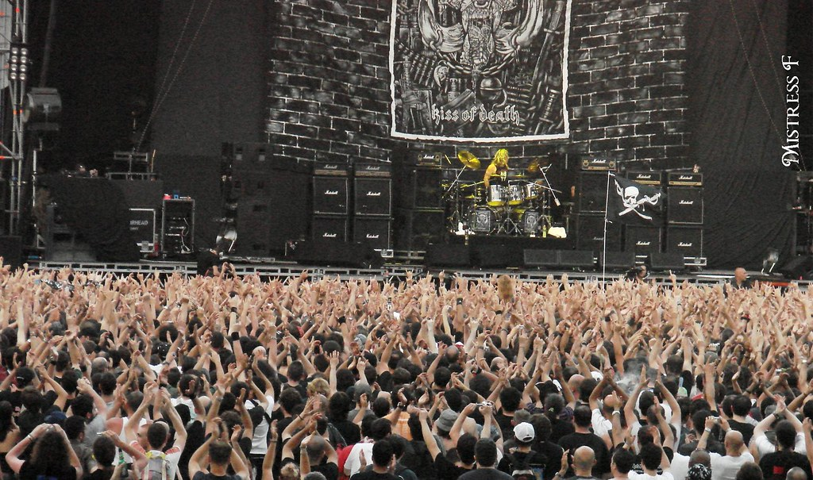
Canada's Role in History's Biggest Benefit Concerts
When the world's musicians gather for a cause, Canada keeps showing up — and not just with attendees. The country's benefit-concert tradition, from the all-star charity singles of…
Storm-Cancelled: Legendary Shows the Weather Won
In most countries, concert cancellations are caused by bands. In Canada, they're caused by *meteorology* — the blizzard that swallowed the highway, the lightning that cleared the…
Bob Ezrin: The Canadian Behind The Wall and Destroyer
Ask a rock fan to name history's great producers and they'll say George Martin, Phil Spector, maybe Rick Rubin. They should say **Bob Ezrin** more often. The Toronto-born…
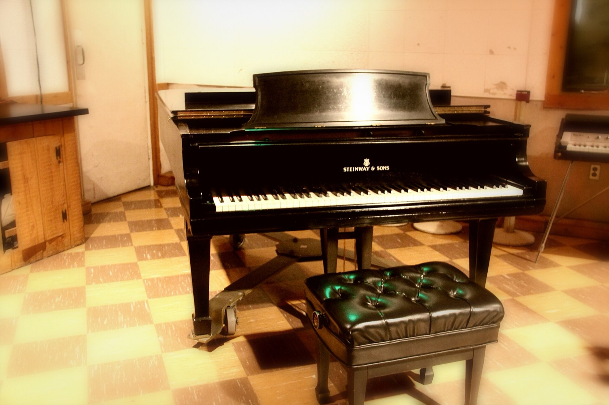
David Foster: Vancouver's Pop Architect
If Bob Ezrin built rock's theater, **David Foster** built pop's cathedral. The Victoria-born, Vancouver-raised producer, songwriter, and arranger became the most decorated…

Bob Rock and Little Mountain: How Vancouver Captured the Biggest Metal Album Ever
The best-selling album of the SoundScan era — Metallica's 1991 "Black Album" — was not made in Los Angeles or New York. It was made in **Vancouver**, at a modest studio…
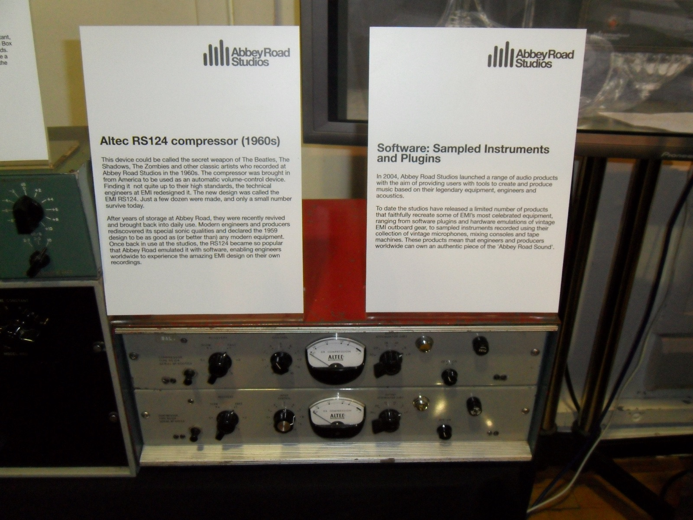
Le Studio: The Woodland Studio Behind Moving Pictures
Some studios are rooms with equipment. A few are *places* — where the geography gets into the tapes. **Le Studio**, the residential recording complex André Perry built in 1972 in…
Classic Canadian Albums Recorded Around a Single Microphone
In an era of infinite tracks and endless plugins, the most radical recording technique is also the oldest: **one microphone, one room, everyone playing around it.** The single-mic tradition…
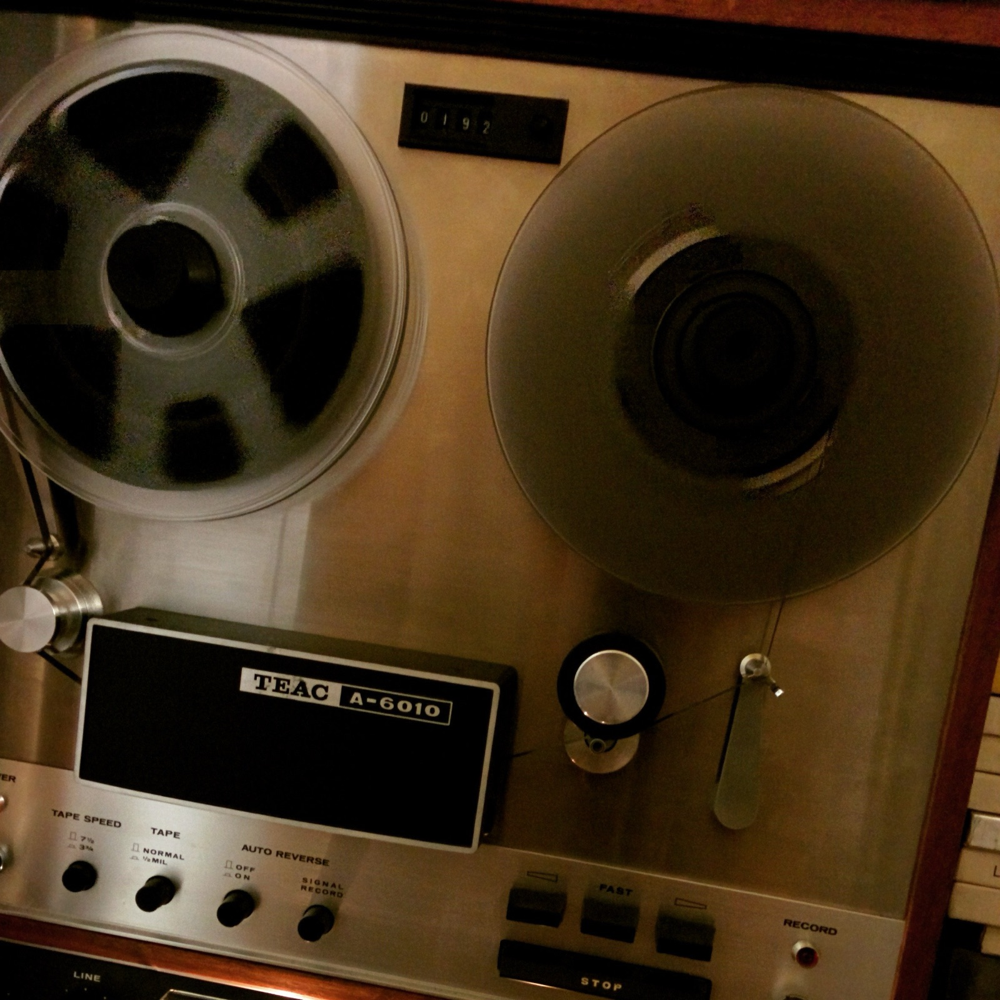
One-Take Wonders: Canadian Recordings Captured Live
The first take has a quality no other take can replicate: the *surprise* of the musicians hearing themselves, the plan still warm, the risk still real. Producers have a saying — *the first…
Bedroom Masterpieces: Home-Recorded Canadian Classics
Some records are made despite the room; the **bedroom masterpieces** are made *because* of it: the intimacy, the solitude, the thousand quiet hours — the home-recorded albums that captured…
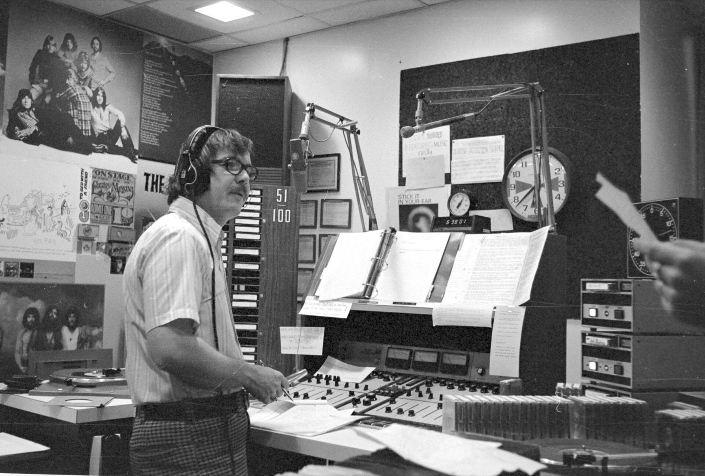
The DJs Who Broke Canadian Bands
Before algorithms, before blogs, before playlist curators became a job title, there were voices on Canadian radio who did the work the whole culture depends on: they listened first, they…

MuchMusic VJs: Where Are They Now?
They came through our living rooms every afternoon for three decades — cool, funny, music-obsessed, and impossibly approachable. The **MuchMusic VJs** were more than hosts: they were the…
Schitt’s Creek's Musical Moments: A Licensing Masterclass
Halfway through *Schitt's Creek*'s run, critics started noticing something odd: a low-budget CBC comedy was spending its music budget like a prestige drama — and every needle-drop…
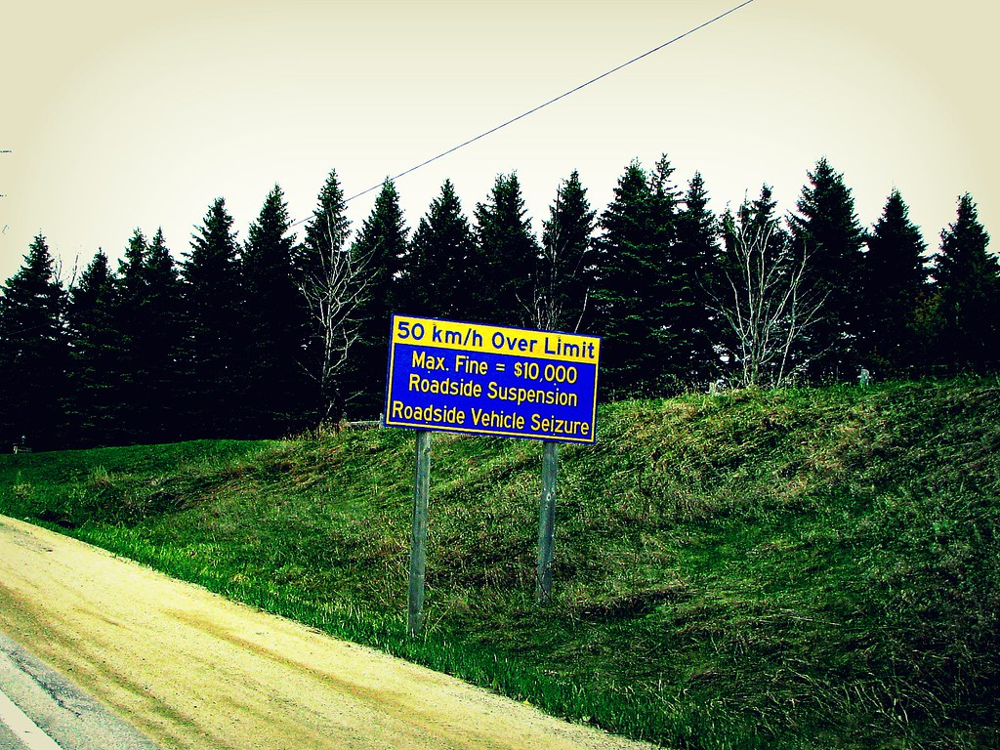
Letterkenny's Musical Muscle
Pay attention to a *Letterkenny* cold open: the stylized slow-motion vignettes — the hockey players strutting, the hicks scheming, the town existing in choreographed tableaux — are scored…
Could MuchMusic Ever Come Back?
The brand still exists — you can find "Much" in the channel guide, a ghost of reruns and nostalgia programming. But the thing itself — a street-facing studio on Queen West, VJs in…
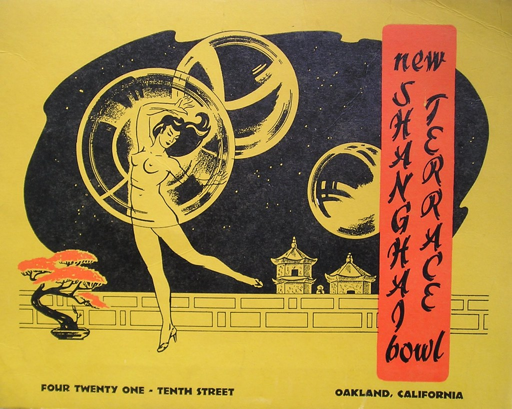
The Promo Men: How Records Got Played in the CanCon Era
Between the finished record and the radio spin stood a figure the public never saw: the **promo rep** — the label road-warrior whose job was to get Canadian records played on Canadian radio…

Name-Dropping Canada: The Strange Art of Songs That Say Our Name
Here's a puzzle for your next trivia night: name a classic Canadian song that contains the word "Canada." Go ahead — take your time. Neil Young will take you to "a town…
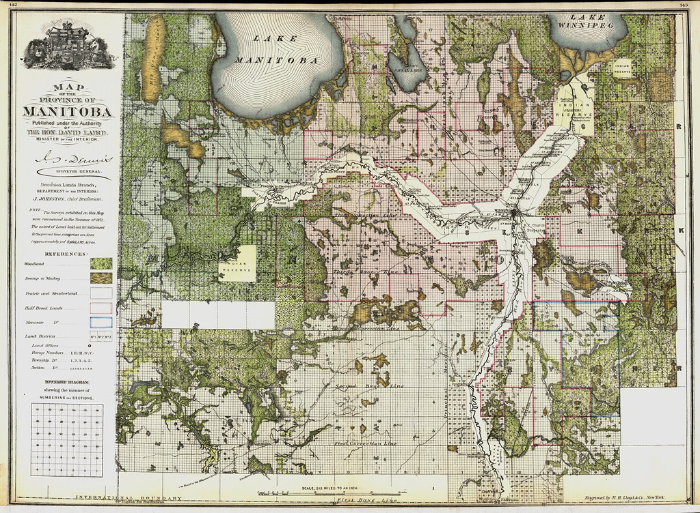
Canadian Place Names in Song: A Musical Atlas
No country's songbook maps it as thoroughly as Canada's does. From the Beaufort Sea to a two-lane highway in Manitoba, Canadian songwriters have spent six decades turning the…

Coming Home: Why the Hometown Show Hits Different
Ask any Canadian artist about the show that matters most and the answer rarely involves the biggest crowd or the fanciest stage. It's the hometown gig — the night when the person on…
If Canada Had One Song, What Would It Be?
It's the question this entire website keeps circling, so let's have the argument properly. Not "best" — *one*. If the country had to be represented by a single…
The Secret Canadians Hiding in Famous American Bands
Here's a parlor game that never gets old: name the famous American band, then ask who's *actually* in it. Canada's fingerprints are all over the golden age of American rock …
Second Acts: What Canadian Musicians Did Next
The music business chews through careers; Canada's musicians, characteristically, refuse to be chewed. Some of the country's most interesting cultural figures are musicians who…
Day Jobs of the Famous: Canadian Musicians' Pre-Fame Lives
Before the arena lights, there were shift schedules. Canada's biggest musical success stories begin, almost without exception, in the country's great pre-fame workplaces: the bar…
The Essential Canadian Music Memoir Reading List
The best history of Canadian music isn't on this website — it's on the memoir shelf: the autobiographies where the musicians tell the story themselves, in their own voices, with…

Wilf Carter: Canada's Original Singing Cowboy
Long before Nashville had a pipeline to Canada, a farm kid from Port Hilford, Nova Scotia, heard a yodel on a passing Victrola? — keep it clean: heard a yodelling record as a boy and spent…
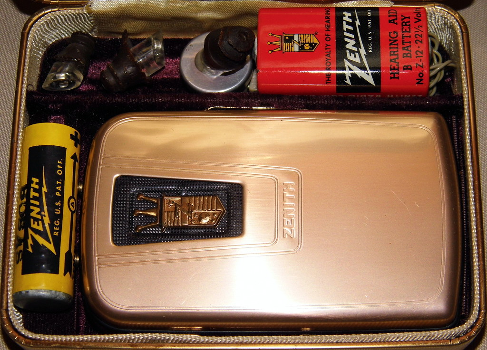
Canadian Chart Firsts: The Milestones That Made History
Every ceiling in Canadian music was broken by somebody specific, and the firsts are more interesting than the superlatives: each one opened a door the rest of the country walked through.…
One City, One Album: The Definitive Record from Every Canadian City
Every Canadian city has one record that *is* it — the album that captures the place's sound, spirit, and specific weather. Choosing one per city is an arbitrary exercise designed to…
Guilty Pleasures: Canadian Music Critics Confess
Music critics spend careers defending the canon; today we come clean about the records we love *without* defense — the Canadian songs that bypass our critical faculties entirely and go…
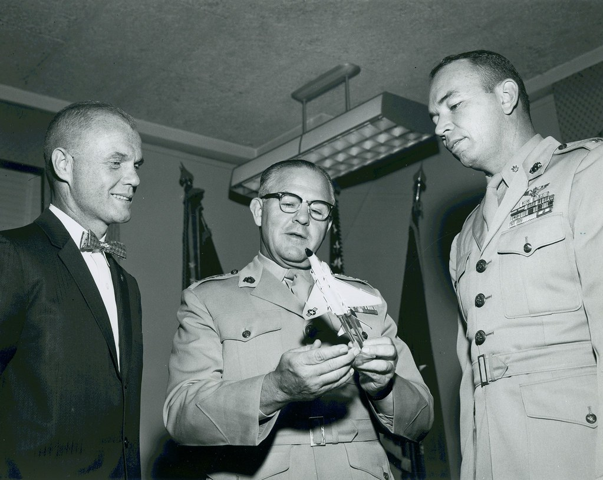
Settled Once and For All: Canada's Great Musical Debates
This country has been arguing about its music since before it was a country, and we've reached the limit of patience? — keep it light: and we've decided to end the arguments — not…

Northern Cree: The Prairie Drum Group the Grammys Keep Nominating
The most Grammy-nominated act you've never heard of might be a **powwow drum group from the Canadian prairies**. **Northern Cree** — the Cree singing group from the Treaty 6? — keep it…
Commander Hadfield's "Space Oddity" and Music's Final Frontier
In May 2013, a Canadian astronaut floating in the International Space Station — on his last day in orbit, after five months commanding the ISS — recorded a music video. It was the **first…
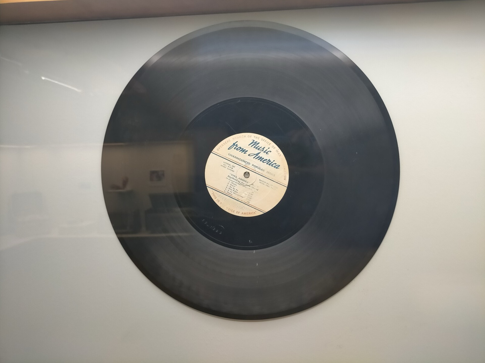
Then and Now: Canadian Musicians' First and Latest Records Compared
A career measured in two points — the first record and the latest — reveals the whole arc in a single glance: what the artist knew at the start, what they learned, and what never changed.…
Alvvays: Jangle from PEI to the World
The prettiest guitar sound in modern Canadian music comes from a band with a defiantly un-pretty name: **Alvvays** — five dream-pop perfectionists who trace their lineage to a Prince Edward…
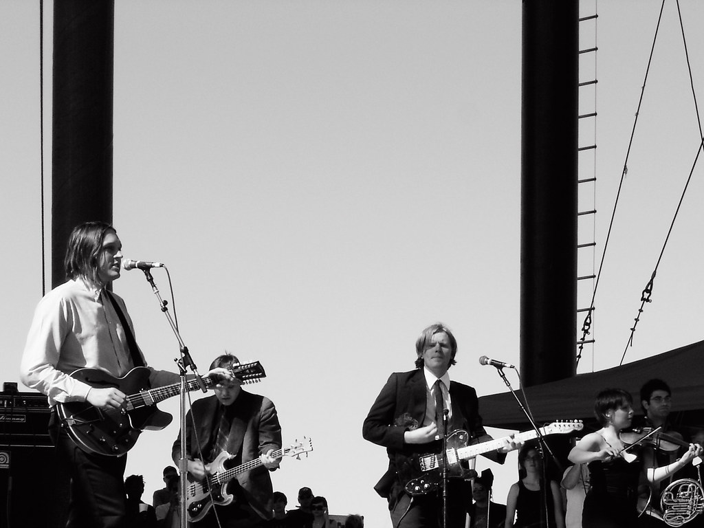
Wolf Parade: Apologies to the Queen Mary's Beautiful Chaos
The Montreal indie explosion (see our features) produced cleaner stars — the Arcade Fires, with their orchestras and anthems. **Wolf Parade** were the explosion's *feral* wing: two…
Stars: Set Yourself on Fire and Montreal's Wounded Pop
Every scene needs a band that treats *heartbreak* as a craft material — not a confessional, but a discipline: polished, layered, and devastating at controlled temperature. For…
Patrick Watson: Building Songs Like Cathedrals
Some musicians write songs; **Patrick Watson** *constructs* them — layer by layer, from whisper to wall of sound, in a process closer to architecture than pop craft. The Montreal-based…
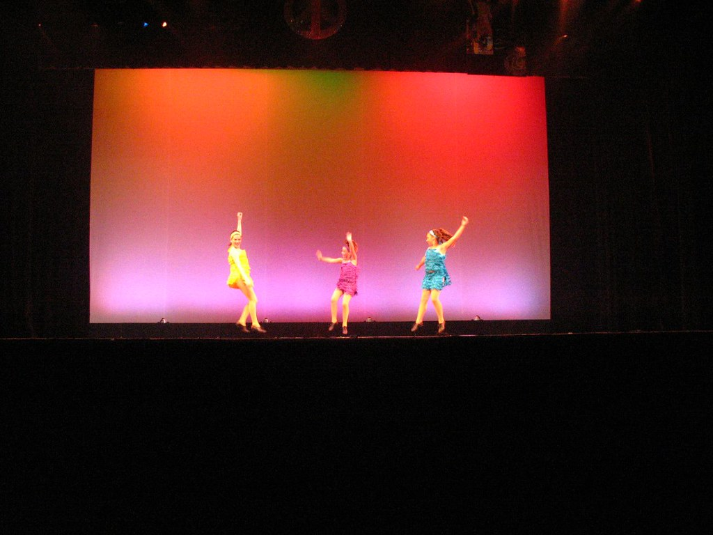
Majid Jordan: OVO's Quiet Architects
History credits the megastars, but movements are built by the *architects* — the ones in the studio at 4 a.m., shaping the sound the star steps into. **Majid Jordan** — the Toronto duo of…

dvsn: Sept. 5th and the Slow-Burn Formula
The OVO Sound roster (see our features) has a type: mystery as brand. **dvsn** — the Toronto R&B duo of singer Daniel Daley and producer **Nineteen85** (Paul Jefferies) — took the…

PARTYNEXTDOOR: The Reclusive Hitmaker
The most influential Canadian musician you've rarely seen is from **Mississauga**. **PARTYNEXTDOOR** — Jahron Brathwaite — is the Toronto wave's great behind-the-curtain figure:…
Grimes: Visions and the One-Woman Universe
There is no precedent in Canadian music for **Grimes** — the Vancouver-raised, Montreal-forged, internet-native artist (Claire Boucher) who built a self-contained universe of sound, image…
Purity Ring: Shrines and the Glowing Pop Sound
In 2012, a duo from **Edmonton** — of all places — released a debut that redefined what Canadian electronic pop could feel like: ***Shrines*** by **Purity Ring**, a record of dark, glowing…
The Horseshoe Tavern: Toronto's Living Room
Every music city has one room that functions as its living room — the place where the scene gathers, generations overlap, and the sign outside means something. In Toronto, that room is the…

The El Mocambo: Neon Palms and Legendary Nights
You could walk past the **El Mocambo** a hundred times before noticing it — a two-story brick box on Spadina Avenue crowned by its one flourish: two glowing palm trees, neon green against…
Lee's Palace: Dancing on the Checkerboard
Ask a Toronto musician of a certain vintage where the 90s happened and a lot of them will point to a former movie theatre on Bloor Street with a mural out front that looks like a fever…
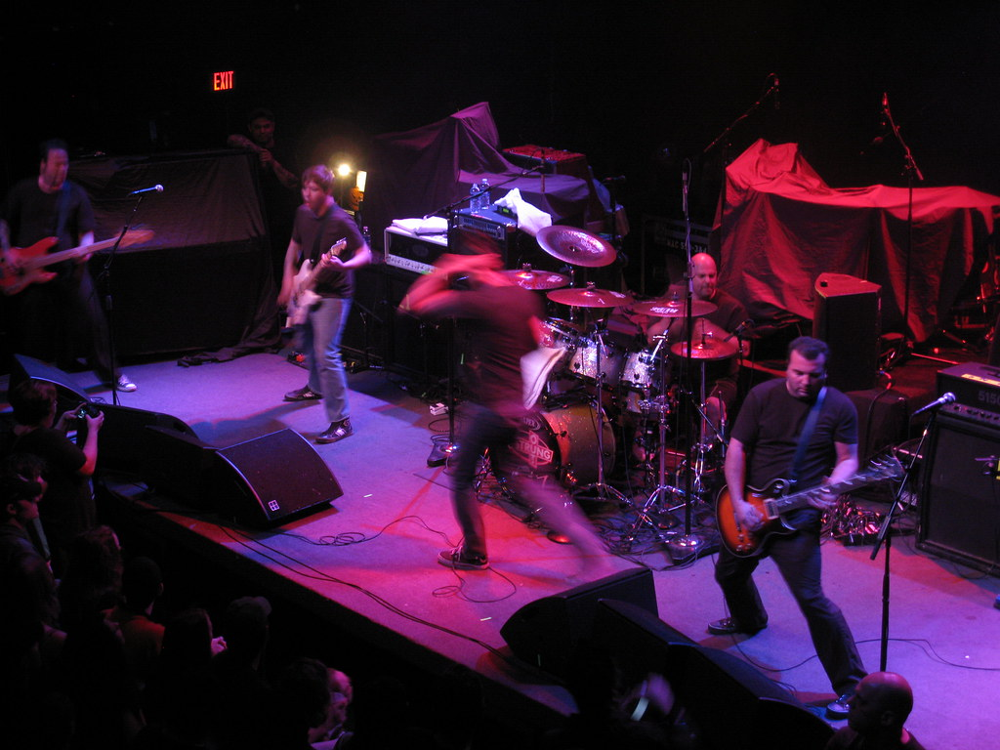
Foufounes Électriques: Montreal's Punk Palace
On Saint Catherine Street East, behind a modest entrance, sits a room that Montreal's punks simply call **the Foufs** — short for Foufounes Électriques, a name as un-translatable as…

The Smilin' Buddha: Vancouver Punk's Birthplace
Every scene has a birthplace — a room so improbable that its existence feels like the scene's origin myth. Vancouver punk's is a basement cabaret on Hastings Street called the…

The Marquee: Halifax's Rock Institution
When historians write about the Halifax pop explosion, the bands get the credit — but the bands will tell you the truth: it happened on a particular stage, in a particular room downtown.…
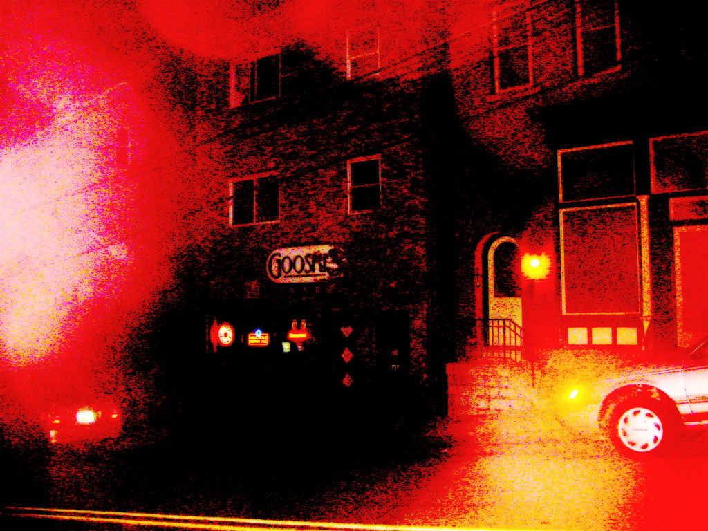
The Royal Albert Arms: Winnipeg's Glorious Dive
Every city's scene has a room that functions as its id — the place where the music is loudest, the nights are longest, and the mythology is written in beer and band stickers. In…

Inside Canadian Artists' Home Studios
The geography of Canadian recording isn't the Hit Factory — it's the spare bedroom, the renovated garage, the farmhouse basement, the apartment closet with a microphone in it. The…
Off the Floor: Canada's Live-Recording Tradition
The studio can do anything — which is exactly the problem. Somewhere between the first overdub and the hundredth, a record can lose the thing that made the band worth recording: the sound…
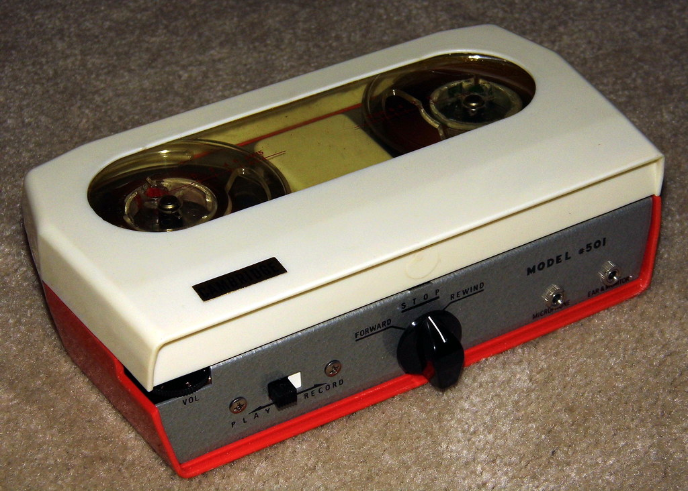
Happy Accidents: Mistakes That Made the Final Mix
The studio rule is supposed to be *fix it in the mix* — but some of the best moments in Canadian recording history are the things nobody fixed: the wrong note kept, the malfunction…

Fights in the Control Room: Creative Friction That Paid Off
The romance of the studio says harmony makes great records. The evidence says otherwise: some of Canada's greatest albums were made *against* each other — the artist and producer, the…
We Gave a Canadian Band 24 Hours to Write and Record a Song
What happens when you take away the luxury of time — the demos, the revisions, the "we'll fix it in mix"? We wanted to know. So we gave a Canadian band a challenge: **24…
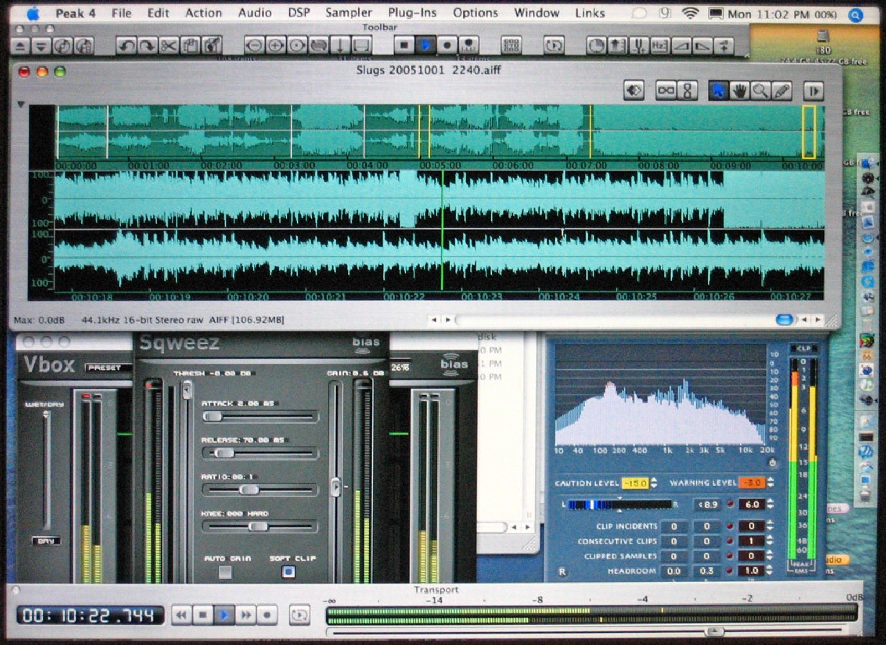
AI and the Canadian Voice: The Week an AI Broke the Music Industry — From Toronto
In April 2023, a mysterious song called "Heart on My Sleeve" appeared on streaming platforms: a convincingly Drake-like voice trading verses with an equally convincing fake The…

The History of Black Canadian Music: From Africville to Now
Black music has been made on this land since long before the country existed — carried by Loyalists, freedom-seekers on the Underground Railroad, and centuries of Caribbean and African…
Filipino Canadian Music: The Rising Wave
The Philippines is a singing culture — karaoke as national sport, family parties built around the microphone, a diaspora that has carried that tradition to every country it settled. In…
Chinese Canadian Musicians Breaking Through
Chinese-Canadian music carries two histories at once: the centuries-deep traditions — Cantonese opera, classical training, community ensembles — and the brand-new breakthrough generation…
Battle of the Bands: The Canadian Proving Ground
Every Saturday, somewhere in Canada, four bands load into a legion hall, a school gym, or a rented club, and submit to the nation's oldest musical judgment ritual: the **battle of the…
House Concerts: Canada's Intimate Circuit
Twenty folding chairs in a stranger's living room. A songwriter three feet away. A donation jar on the piano. The **house concert** — Canada's most intimate performance format …

Nomeansno: Progressive Punk from Victoria
Punk's first wave produced plenty of speed and plenty of anger. It produced very few bands that could also *swing*. **Nomeansno** — the Victoria-via-Vancouver trio (and later quartet)…
D.O.A.: Hardcore's Canadian Godfathers
The word "hardcore" — the one every punk subgenre now carries — has a birthplace: a Vancouver album called ***Hardcore '81***. The band that made it, **D.O.A.**, had been…
The Diodes: Toronto Punk's First Wave Pioneers
History belongs to those who get there first. In Toronto, in 1977, the band that got there first was **the Diodes** — art-school kids with razor-sharp songs and the nerve to put out a…
Teenage Head: Hamilton's Greaser Punk Kings
Every first-wave punk scene had its great "what if" — the band that should have conquered the world and somehow didn't. In Canada, that band is **Teenage Head**, the Hamilton…
The B-Girls: Toronto's Blondie-Approved Punks
The first all-women band of Toronto's punk scene didn't wait for anyone's approval — they got it from the Ramones and Blondie instead. **The B-Girls** — a gang of friends who…
Fifth Column: Queer Punk Before Queercore Had a Name
In 1980s Toronto, an all-women band was a statement. An all-women band that was *unapologetically queer, politically radical, and artistically fearless* was a small revolution. **Fifth…

The Nils: Montreal's Melodic Hardcore Heartbreak
Some bands are legendary because of what they became. **The Nils** are legendary because of what they *almost* became — and because of the tragedy that ended the story mid-sentence. The…

SNFU: Edmonton's Art-Damaged Hardcore Institution
Hardcore punk is supposed to burn fast and die young. **SNFU** — Edmonton's legendary lunatics — burned for forty years instead, and the fire never once behaved. Fronted by the…
Chilliwack: Fly at Night, B.C. Rock's Journeymen
The longest-running band in Canadian rock doesn't get its due — mostly because **Chilliwack** never demanded it. From psychedelic beginnings as the Collectors through the 70s FM era to…
Prism: "Spaceship Superstar" and the Vancouver Sound
Before Vancouver was the city of Little Mountain and Bob Rock (see our features), it was the city of **Prism** — a band that began, fittingly, as a *studio project* and became one of the…
Sheriff: "When I'm with You" and the Strangest #1 Ever
The history of Canadian one-hit wonders has one entry stranger than all the rest — a record that hit #1 in America **three years after the band that made it had broken up**. That band was…
Toronto (the Band): "Your Daddy Don't Know" and the New Wave Survivors
Imagine naming your band after your city — the whole city, just "Toronto" — and then living up to it. The band **Toronto** did exactly that in the early 80s: a female-fronted…
Saukrates: The City's Most Respected MC/Producer
In a scene that canonizes its stars, **Saukrates** holds the rarer title: the *musician's musician* — the Toronto MC/producer whose dual-threat career (bilingual? no: both rapping and…
Jully Black: "Seven Day Fool" and the Soul of Toronto
**Jully Black** is called Canada's Queen of R&B so often the title risks flattening the story behind it: a three-decade career built on one of the country's great voices, a…
Swollen Members: Fuel Injected and Vancouver's Rap Dynasty
The East Coast tells the Canadian hip-hop story through Toronto; the West tells it through **Swollen Members** — the Vancouver duo (MCs **Madchild** and **Prevail**, with producer **Rob the…
Boi-1da: The Architect of Toronto's Rap Sound
If Noah "40" Shebib gave Toronto rap its *atmosphere*, **Boi-1da** gave it its *anthems*. Matthew Samuels — the producer whose tag you'll hear across two decades of hits …
Noah "40" Shebib: The Quiet Sound of OVO
Every musical empire has an architect whose name the casual fan can't quite place. For Toronto's global takeover, that architect is **Noah "40" Shebib** — Drake's…
Chromeo: Montreal's Funk Revivalists
The great trick of **Chromeo** — the Montreal duo of David "Dave 1" Macklovitch and Patrick "P-Thugg" Gemayel — is that the irony and the sincerity are the *same thing*:…
Junior Boys: Hamilton's Quiet Synth Revolution
**Junior Boys** — the Hamilton synth duo of Jeremy Greenspan and Johnny Dark (later Matt Didemus) — never chased the blog-house boom they accidentally preceded. They made *quiet* electronic…
Caribou: Manitoba's Psychedelic Electronica
**Caribou** — the shape-shifting electronic project of **Dan Snaith** — has the most quietly complete career in Canadian electronic music: a mathematics PhD (from Imperial College London? …
Hank Snow: "I'm Movin' On" and the Nova Scotia–Nashville Pipeline
The biggest country hit of the 1950s — arguably the biggest country record ever made — came from a man who'd left a hard Nova Scotia childhood with nothing but a guitar and an iron…
Ian and Sylvia: The Folk Duo That Connected the Continents
Before the Guess Who, before Neil Young's return, before anyone had coined CanCon, two singers from the Toronto folk scene carried Canada's name into the heart of the American…
The Rankins: Cape Breton's Family Voices
Some families sing at the kitchen table. The Rankins turned it into one of the most beloved careers in Canadian music. **The Rankin Family** — siblings Cookie, Raylene, Heather, John…
Rita MacNeil: "Working Man" and Cape Breton's Heart
Cape Breton doesn't do anything halfway, and it doesn't love anyone halfway either. The island loved **Rita MacNeil** completely — the shy, big-hearted songwriter from Big Pond…
Natalie MacMaster: Cape Breton Fiddling's Global Ambassador
The lineage was impossible: Buddy MacMaster, the godfather of Cape Breton fiddling, was her uncle, and she grew up in the tradition's very house? — keep it clean: grew up steeped in…

The Irish Rovers: "The Unicorn" and the Long Tail
In 1968, a group of Irish immigrants playing Toronto's folk clubs recorded a Shel Silverstein novelty song about the end of the unicorns, and accidentally built a sixty-year…
Corb Lund: Western Swing Meets Ranch Life
Canada's cowboy music tradition is a century old — Wilf Carter started it, Ian Tyson gave it poetry — and its finest current custodian is **Corb Lund**, the Alberta ranch kid who can…
The Be Good Tanyas: Vancouver's Ghost-Folk Trio
In the early 2000s, when "folk" was a dirty word in indie circles, a Vancouver trio made it *haunting*: **the Be Good Tanyas** — three voices and a handful of old-time instruments…

The Wailin' Jennys: Winnipeg's Harmony Institution
Some bands are named for what they do; **the Wailin' Jennys** — the name a pun on the Waylon Jennings? — keep it light: the name a gentle pun on outlaw-country fame — were named for…
Lenny Breau: The Guitarist's Guitarist
Ask the world's greatest guitarists about Lenny Breau and watch them go quiet. **Chet Atkins** called him the best guitarist in the world and signed? — keep it clean: and championed…
Moe Koffman: "Swinging Shepherd Blues" and the Sound of Toronto Jazz
Every Canadian city has a musical golden age; Toronto's ran on swing, and its soundtrack had a flute on top. **Moe Koffman** — flutist, saxophonist, bandleader, and session titan — was…
Jeff Healey: "Angel Eyes" and the Legend of the Lap Guitar
Picture the standard image of the blues guitar hero: sunglasses, swagger, guitar slung high. Now invert the guitar entirely. **Jeff Healey** — blind from infancy, his instrument laid flat…
Downchild Blues Band: The Blueprint for the Blues Brothers
Before Jake and Elwood, there was Toronto's own **Downchild Blues Band** — and the resemblance was no coincidence. When Dan Aykroyd and John Belushi built their Blues Brothers act in…
Colin James: "Voodoo Thing" and the Three-Decade Crossover
**Colin James** is the answer to a trick question: which Canadian artist scored a top-40 American rock hit as a teenager, kept charting at home for three decades, jumped from blues to rock…
Big Sugar: "Diggin' a Hole" and the Heaviest Groove in Canada
Somewhere between a blues bar, a Kingston sound system, and a southern-rock arena, there's a Venn diagram intersection that only one band has ever fully occupied. **Big Sugar** — the…
Holly Cole: Jazz-Pop's Cool Canadian Voice
In the early 90s, when "jazz" still conjured cocktail lounges for most of Canada, **Holly Cole** did something radical: she treated the Great American Songbook with post-punk…

Molly Johnson: From the Infidels to the Velvet Jazz Voice
Some careers are a straight line. **Molly Johnson's** is a whole map: Toronto alt-rock frontwoman in the 80s, international club hitmaker in the 90s, and finally — almost as a third…
Beau Dommage: Quebec's 1970s Songbook
Every country has a band that becomes its *songbook* — the one whose catalog stops being a discography and becomes a shared language. For Quebec's post-Quiet-Revolution generation…
Diane Dufresne: Quebec's Theatrical Chanson Star
In the 1970s, while the rest of the world was discovering arena rock, **Diane Dufresne** was inventing something equally spectacular in Quebec: the *chanson* concert as total theatre …
Les Trois Accords: Humor as a Quebec Art Form
Quebec takes its humor *seriously* — the province's comic tradition (from the *vaudeville* era to the modern humorist-composers) is a pillar of its culture, and **Les Trois Accords**…
“Your Love”: Lime’s Hi-NRG Anthem, and the Montreal Studio That Built It
In 1985, a song with a bubbling synth bassline, a four-on-the-floor kick, and a vocal pitched somewhere between passion and circuitry climbed dance charts across Europe. “Your Love” by Lime…

“Doesn’t Really Matter”: Platinum Blonde’s New Wave Crown
They looked like a band shipped in from London and sounded like the future of Toronto. Platinum Blonde — singer Mark Holmes, guitarist Sergio Galli, bassist Kenny MacLean, and drummer Chris…
“New Girl Now”: The Radio Contest That Launched a Working Band
Honeymoon Suite's origin story is the classic Canadian rock fairy tale with a twist of luck that now sounds like legend: a band from Niagara Falls enters a Toronto radio station's…

“Metal Queen”: Lee Aaron’s Coronation, and the Door She Kicked Open
In 1984, a 21-year-old from Belleville, Ontario — born Karen Lynn Greening — released a song that named its own mythology. “Metal Queen” was Lee Aaron's coronation anthem: a…
“White Lies/Black Truth”: Slik Toxik and Toronto’s Last Glam-Metal Stand
For one bright moment in the early 90s, Toronto's Queen Street strip had a band that looked and sounded like it had been beamed in from the Sunset Strip — and MuchMusic gave it the…
“Call It Love”: The Payolas’ Second Act, and the Reinvention That Confounded Everyone
The Payolas' story has two distinct lives, and “Call It Love” belongs to the stranger second one. The Vancouver band — Paul Hyde and Bob Rock (yes, that Bob Rock) among them — began as…

“The Oaf”: Big Wreck's Devastating Debut, and the Voice That Built a Career
The first thing you hear is the guitar — a thick, descending riff that sounds like a wall falling slowly — and then Ian Thornley's voice arrives, sandpaper and ache in equal measure.…
“The House That Heaven Built”: Japandroids' Two-Person Wall of Noise
By every rule of rock arithmetic, a duo of guitar and drums shouldn't sound like an army. Japandroids — Brian King and David Prowse, from Vancouver — spent the early 2010s proving…
“Weighty Ghost”: Wintersleep's Spectral Hit, and the Ghost That Followed the Band
Some songs haunt their own authors. “Weighty Ghost” arrived in 2007 as the first single from Wintersleep's *Welcome to the Night Sky* and immediately did something no one in…
“Bandages”: Hot Hot Heat's Twitchy Masterpiece, and the Island Band That Went Global
Victoria, British Columbia is known for many things; launching an international dance-punk band is not traditionally one of them. Hot Hot Heat — twitchy, wired, and unfailingly melodic …
“Hayloft”: Mother Mother’s Accidental Second Life
Few songs have lived two full lives as different as “Hayloft.” Mother Mother recorded it in 2008 for their album *O My Heart* — a twitchy, harmony-drenched indie-rock track with a sinister…
“Stereo”: The Watchmen's Living Room Anthem
There is a particular species of Canadian rock song — unhurried, sincere, built for dorm rooms and long drives — and “Stereo” by the Watchmen is one of its purest specimens. Released in…
“When Something Stands for Nothing”: The Headstones' Sneer, Perfected
The Headstones arrived in 1993 like a bar fight set to music: Kingston, Ontario's loudest export, fronted by Hugh Dillon — a singer who delivered every lyric like he'd been…
“Red”: Treble Charger's Sharpest Turn
Treble Charger had already lived one full life before “Red.” The band began in the early 90s as a noisy, fuzz-drenched indie outfit — darlings of campus radio with albums like *nc17* and…
“The Bird Dance”: The Emeralds' Accidental National Craze
It is statistically probable that someone in Canada is doing the Bird Dance right now — at a wedding, a community hall, a hockey intermission, a family reunion where the DJ knows exactly…

“Sh-Boom”: The Crew-Cuts' Chart Heist, and the Cover Song's Original Sin
The story of “Sh-Boom” is the story of the whole music industry in miniature: a Black vocal group records a joyful doo-wop original; four white singers from Toronto cover it, smooth off its…
Nettwerk: From a Vancouver Living Room to a Global Empire
In 1984, a group of friends in Vancouver started a record company with roughly nothing: no office to speak of, no industry connections worth the name, and a hunch that the music they loved…
Arts & Crafts: The Label That Branded 2000s Indie Canada
For one golden decade, if you wanted to sound like Canada to the rest of the world, you signed to Arts & Crafts. The Toronto label — founded in 2003 around Broken Social Scene's…
Constellation Records: Montreal's Fiercely Independent Spine
While the 2000s indie boom made Canadian music marketable, one Montreal label spent the same years making it *unmarketable on purpose* — and became globally revered for it. Constellation…
Mint Records: Vancouver's Pop-Punk Powerhouse
Some labels are built in boardrooms. Mint Records was built by friends in a van. Founded in Vancouver in 1991 — in the thick of the era when the city's music scene was exploding — Mint…
Dine Alone Records: The Hamilton Upstart That Went National
Every Canadian indie label story is some version of "started in a basement." Dine Alone's twist is that the basement was in Hamilton, the founder was a teenager running…
Royal Mountain Records: Toronto's New Guard
By the mid-2010s, Canadian indie needed new blood — a label for the post-blog, post-MuchMusic generation, built by someone who'd actually been through the machine. Enter **Menno…

Sneaky Dee's: Nachos, Pins, and Punk
Some institutions are buildings; **Sneaky Dee's** is a *substance* — nacho cheese, punk sweat, and marker ink on the bathroom walls, layered since the 1980s at College and Bathurst.…
The Cameron House: The Little Venue That Could
Across from the Rivoli sits an even smaller Queen West legend: the **Cameron House**, a narrow little bar whose cultural footprint far exceeds its square footage. For four decades, the…
The Rivoli: Queen West's Everything Room
Queen Street West has had rooms that did one thing perfectly. **The Rivoli** did *everything* — and kept doing it, decade after decade, through every wave of the neighborhood's…
Club Soda at 40: Montreal's Mid-Size Institution
Every healthy music city needs a great mid-size room — the venue between the club and the arena, where scenes test their scale. For Montreal, that room is **Club Soda**, the Saint-Laurent…
La Tulipe: Montreal's Beautiful Listening Room
Some venues are about seeing; the best ones are about *hearing*. **La Tulipe**, the cabaret-style room on Papineau Avenue in Montreal, belongs to the hearing category — a gorgeous, gilded…
The Zoo: Winnipeg's 90s Noise Incubator
In the 1990s, while the rest of the country was buying *Big Shiny Tunes*, Winnipeg's underground was getting loud in a little room it called **the Zoo**. The venue — a modest club in…
Zaphod Beeblebrox: Ottawa's Sci-Fi Dive
Long before Ottawa's music scene had much of anything, it had a club named after a **two-headed, three-armed alien** from *The Hitchhiker's Guide to the Galaxy*. **Zaphod…
Barrymore's: Ottawa's Surviving Theatre
In a city that keeps its government buildings forever and its music venues for about fifteen minutes, **Barrymore's** is the glorious exception: a century-old theatre in the ByWard…
CFNY Before the Edge: The Spirit of Radio's Origins
Rush named one of their most beloved songs after it. An entire generation of Ontario teenagers organized their musical lives around it. And it began as a scrappy independent station in…

Celebrity Radio Shows: How Two Torontonians Took Over Streaming Radio
When Apple launched its global streaming radio station in June 2015, the gamble was that a single digital channel — beamed to every iPhone on earth — could matter again. The station's…
The Band: How Four Canadians and an Arkansan Invented Americana
The most American-sounding band of the late 1960s was, by majority, Canadian. Rick Danko, Levon Helm (the Arkansan), Garth Hudson, Richard Manuel, and Robbie Robertson — four-fifths Canuck…